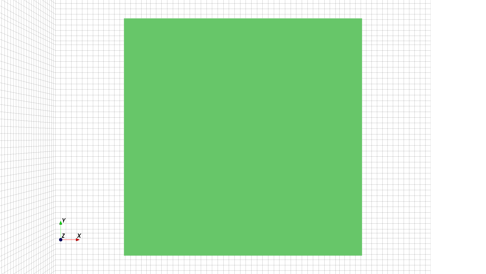

Parallel-Plate Capacitor and Waveguide
This tutorial covers
Model: Learn how to set up the components of a basic 3D FDTD model, including:
Create conductors in the simulation box.
Create a Cartesian mesh (Yee’s cells) and correctly apply the 1/3-2/3 rule to ensure accuracy.
Add an excitation port with signal.
Inspect the finished 3D model with AppCSXCAD.
Boundary Conditions: Understand the available boundary conditions in openEMS and their physical interpretation.
Simulate: Run simulation to obtain the S-parameters (frequency response) of the waveguide.
Built-in Post-Processing: Calculate the final frequency response (S-parameters) and time-domain signal waveforms.
Plot S-parameters, Z-parameters, time-domain waveforms via matplotlib.
Save the raw electromagnetic field dump.
Third-Party Post-Processing: Know the common tools for data analysis.
Understand that S-parameters are the parameters that characterize a linear circuit’s frequency response as a blackbox without knowledge of the underlying physics. The physics is open to interpretation.
Plot S-parameters on Smith, line charts, and calculate Time-Domain Reflectometry via
scikit-rf.Simulate the waveguide’s time-domain response and eye diagrams via the Python package
SignalIntegrityPlot the S-parameters using Qucs, compare our results with an ideal microstrip transmission line, and with experimental data.
Visualize electromagnetic fields using ParaView.
Coding Standard: Refactor the simulation code with good programming practice in mind, by keeping 3D modeling, simulation, and post-processing as separate functions. This ensures that different simulations can be ran with different parameters in the future.
Problem
A rectangular parallel-plate capacitor in a vacuum is a staple in physics classes, but the physics involved is far more complex than an ideal capacitor in introductory books. In the RF/microwave regime, the signal’s wavelength is comparable or smaller than the physical size of the capacitor, the plates form a two-conductor transmission line, known as a parallel-plate waveguide. A real waveguide with a finite size also complicates the problem due to fringe field, neglected in most theoretical treatments. The large plate separation makes the problem even harder due to radiation loss and multimoding. It’s easy for the signal to escape from the structures. acting as an antenna. Moreover, this structure supports both the familiar TEM-mode waves in two-conductor transmission lines such as ordinary cables, and the TE/TM-mode waves in an enclosed one-conductor waveguide.
By numerically solving Maxwell’s equations from scratch, a 3D full-wave field solver like openEMS is the most practical way to predict its behavior.
Our task is to find the frequency response of this rectangular parallel-plate waveguide. The plates are 100 mm x 100 mm rectangular metal plates with negligible resistance, negligible thickness, and separated by 16 mm of vacuum.
The 2D cross-section of the 3D waveguide is the following:
Create Conductors
An openEMS simulation always starts by creating a 3D model of the Device-Under-Test
(DUT) using the CSXCAD library. We import the library in Python, and create an empty
structure called csx:
import CSXCAD
csx = CSXCAD.ContinuousStructure()
The next step is to create an instance of material to build an object. Since we’re
modeling metal plates with negligible resistance, we use the CSXCAD function
AddMetal() to obtain an instance of a Perfect
Electric Conductor (PEC):
# Create an instance of material named "plate".
# AddMetal() creates a Perfect Electric Conductor.
metal = csx.AddMetal('plate')
Note
Internally, PEC is implemented by forcing the tangential electric field in this region be zero, which is the behavior of an ideal conductor that can’t be penetrated by electric field lines. If resistive losses are unimportant, one can use PEC rather than a realistic material model for simplicity and efficiency.
To add a general material (defined by a permittivity, permeability, electric
conductivity, magnetic conductivity) such as dielectrics, use
AddMaterial(). In principle, it works for
3D metals as well. But thin metal sheets are challenging for FDTD, to capture
effects like surface current (skin effect) requires an impractically high
resolution mesh. Thus, it’s recommended to use
AddConductingSheet() which mimicks the
resistive loss in metals using a simplified model that still treats metals
as zero-thickness 2D planes, modeling the observed loss rather than the full
physics.
In the next step, we build a box using our material “metal”, using the
AddBox() function. It accepts two 3D
coordinates to specify the region occupied by the box.
Our waveguide plates are 100 mm x 100 mm rectangular metal sheets, separated by a 16 mm vacuum (i.e. empty space). Following the convention of CAD, we center the plates around the origin. Thus, for the upper plate, both its X and Y coordinates are (-50, 50). Their Z coordinates are -8 and 8 respectively, which means these metal plates have no thickness:
# Build two 3D shapes from -50 to 50 on the X/Y axes, located at Z = -8
# and Z = 8 respectively. Note that the starting and stopping Z coordinates
# of each plate are the same, resulting in metal plates with zero thickness.
metal.AddBox(start=[-50, -50, -8], stop=[50, 50, -8]) # lower plate
metal.AddBox(start=[-50, -50, 8], stop=[50, 50, 8]) # upper plate
Now it’s a good time to take a look at the structure that we’ve just created
by saving the CSXCAD structure as a file. It’s best to keep a call to
Write2XML() always at the bottom of a script
during development, so the model can be inspected at any time:
import sys
import pathlib
# find the directory of the script itself
filepath = pathlib.Path(__file__)
# create a directory named after the script, but without ".py"
simdir = filepath.with_suffix("")
simdir.mkdir(parents=True, exist_ok=True)
# find the filename of the script itself, and replace ".py" with ".xml"
xmlname = filepath.with_suffix(".xml").name
# concat path
xmlpath = simdir / xmlname
csx.Write2XML(str(xmlpath)) # convert Path object to string
Once saved by executing our Python script, one can open the file via AppCSXCAD to visualize the model:
$ AppCSXCAD Parallel_Plate_Capacitor_Waveguide.xml
One can inspect the 3D model by dragging its 3D view with a mouse.
Important
If you’re using Wayland, AppCSXCAD may not work correctly, see Notes for Wayland Users.
Here’s the XY and YZ cross-sections of the correct 3D model:
{kind=link}
{kind=link}
Requirements for the Mesh
At this point, the 3D object itself is materialized. In the next step, we create a mesh to partition the continuous 3D box into discrete rectangular cuboids. In the Finite-Difference Time-Domain (FDTD) algorithm, these cuboids discretize the 3D space and form the basic unit of electromagnetic calculations. They’re known as Yee’s cells (named after Kane S. Yee’s 1966 algorithm).
General Requirements
In general, the mesh must satisfy three requirements:
Its interval must be small enough to resolve the shortest wavelength (highest frequency component) of the signal, so that electromagnetic field details are not missed. Thus, we need several cells per wavelength.
Its interval must be small enough to resolve the shapes of the simulated structure (especially small details), so that the details of the structure are not missed. Thus, we need at least a few cells around the important shapes (such as the waveguide plates) of the structure.
Its interval should not change suddenly by a large factor.
As a rule of thumb, we want a mesh resolution of at least:
Note
This is the same “1/10 wavelength” rule of thumb used for determining whether transmission line effects are significant in a distributed circuit.
The relationship between wavelength and frequency is:
in which \(\lambda\) is the wavelength of the electromagnetic wave in meters, \(v\) is the speed of light in a medium, in meters per second, and \(f_\mathrm{max}\) is the highest frequency component of the signals used in simulation.
The speed of light in a medium is given by:
in which \(c_0\) is the speed of light in vacuum, \(\epsilon_r\) is the relative permittivity of the medium (in engineering, it’s sometimes also denoted as a material’s dielectric constant \(D_k = \epsilon_r\)). In vacuum, \(\epsilon_r = 1\) and \(\mue_r = 1\) exactly. The \(\mue_r\) term is usually omitted in engineering since most insulators (like plastics or fiberglass) is non-magnetic.
Courant-Friedrichs-Lewy (CFL) Criterion
In general, the CFL criterion governs the stability of FDTD calculations. It states that the simulation timestep can’t be larger than:
in which \(v\) is the wave speed, \(\Delta x\), \(\Delta y\), \(\Delta z\) are the distances between mesh lines.
This creates a peculiar limitation: the simulation timestep must both be small enough to resolve the shortest wavelength, and to resolve the smallest mesh cell.
Even for simulations at low frequencies, as long as the simulated structure has small features (i.e. mesh distance is short), we must use very small timesteps, iterating simulation box several nanoseconds at a time. Below the shortwave band under 30 MHz, the number of iterations grows to an impractical number. This means openEMS (and other textbook FDTD solvers) are unsuitable if there’s a large mismatch between the signal wavelength and the physical size of the structure, such as a 10 cm circuit board at 1 MHz (300 m in vacuum).
Note
In openEMS, just ensure the mesh itself is correct. There’s
no need to calculate the required timestep size, as it
automatically calculates simulation timesteps
using a modified criterion named Rennings2, not CFL
(derived
in the unpublished paper 11, see
SetTimeStepMethod()).
But the general limitation still applies.
If you really need small cells (e.g. to resolve some important feature of your structure) you will have to live with long execution times, or perhaps FDTD is not the right method for your problem. As a workaround, one may also try extracting the circuit parameters using a higher signal frequency, general linear circuit simulators can subsequently simulate this equivalent circuit at low frequencies.
Create a Mesh
Obtain the Mesh Object
We obtain the mesh object by calling GetGrid()
to manipulate it further, and set its unit of measurements to 1 mm (1e-3
meters):
mesh = csx.GetGrid()
unit = 1e-3
mesh.SetDeltaUnit(unit)
Decide the Upper Frequency and Mesh Resolution
Let’s pick an arbitrary upper frequency of 10 GHz. Based on the previous analysis, one can calculate the desired mesh resolution via the following code:
import math
from openEMS.physical_constants import C0
f_max = 10e9
epsilon_r = 1
v = C0 * math.sqrt(epsilon_r)
wavelength = v / f_max / unit # convert to millimeters
res = wavelength / 10
A Simple But Flawed Mesh
Now, the most straightforward way of meshing the model is to draw some lines
between (-50, 50) on the X and Y axis, and some lines from (-8, 8) on the Z axis.
This is best done by drawing two lines at the beginning and end of each axis,
using the AddLine() method:
mesh.AddLine('x', [-50, 50]) # two lines at -50, 50
mesh.AddLine('y', [-50, 50]) # two lines at -50, 50
mesh.AddLine('z', [-8, 8]) # two lines at -8, 8
Once we have two lines per axis, one can ask CSXCAD to automatically smooth
the mesh based on all existing lines via
SmoothMeshLines(). Its second argument
is the minimum spacing between the lines, here we let it to be res. This is the
desired mesh resolution we’ve just calculated:
mesh.SmoothMeshLines('x', res)
mesh.SmoothMeshLines('y', res)
mesh.SmoothMeshLines('z', res)
Now it’s a good time to rerun the script and inspect the 3D model again in AppCSXCAD.
Hint
You possibly can’t see the mesh lines in AppCSXCAD, as they’re made invisible due to their overlaps with the object. If it happens, it’s necessary to view the model from an angle or a different direction (e.g. if there are no mesh lines when viewed from the top, try dragging the model to view it from with a slight angle). It’s also useful to change the “Grid opacity” slider to the maximum (but it still requires viewing from an angle).
Our 3D model’s XY and YZ cross-sections are:
{kind=link}
{kind=link}
A Practical Mesh
Unfortunately, using the mesh as shown in a simulation will produce incorrect results due to several problems.
The simulation box is as large as the waveguide, there’s no empty space around the waveguide in the simulation box, so the electric field around the waveguide is not modeled correctly. There are legitimate use cases for this model, such as when modeling an infinite-length waveguide (with Absorbing Boundary Conditions), or a capacitor stuck in a metal box (with Perfect Electric Conductor boundary conditions). But here, we are modeling a finite waveguide with realistic behaviors, including fringe fields and radiation.
As a quick fix to the problem, one can make the simulation box several
times as big in volume in comparison to the waveguide, giving plenty of
room for the simulation to breathe. We delete the original three
AddLine() calls and replace them with
the following:
# delete these lines
# mesh.AddLine('x', [-50, 50]) # two lines at -50, 50
# mesh.AddLine('y', [-50, 50]) # two lines at -50, 50
# mesh.AddLine('z', [-8, 8]) # two lines at -8, 8
# mesh.SmoothMeshLines('x', res)
# mesh.SmoothMeshLines('y', res)
# mesh.SmoothMeshLines('z', res)
mesh.AddLine('x', [-100, 100]) # two lines at -100, 100
mesh.AddLine('y', [-100, 100]) # two lines at -100, 100
mesh.AddLine('z', [-50, 50]) # two lines at -50, 50
Another problem is that the mesh is perfectly aligned with the edges of the waveguide plates. In simulations, the edge of a structure creates singularities with strong electric fields, creating significant errors that can’t be removed even when tiny cells are used.
To mitigate this fundamental error source of FDTD, the mesh should be intentionally misaligned with the metal edge. For the best results, we introduce additional cells with different sizes around the edge, creating an overall rectilinear mesh of non-uniform size. Around the metal edge, the metal occupies 1/3 of a cell, while the vacuum or insulator occupies 2/3 of a cell. This is known as the 1/3-2/3 rule.
Let’s apply the rule to the X and Y axis:
# strategically draw lines misaligned with the waveguide's left and right edges,
# so that the edge occupies 33% space within a cell.
mesh.AddLine('x', [-50 + res * 1/3, 50 - res * 1/3]) # apply 1/3-2/3 rule on the X axis
mesh.AddLine('y', [-50 + res * 1/3, 50 - res * 1/3]) # apply 1/3-2/3 rule on the Y axis
Another thing to note is that zero-thickness objects like the metal plates must align to an exact mesh lines, otherwise these objects can’t be simulated. Thus, we create two mesh lines on the Z axis at the exact level of the plates:
# zero-thickness metal plates need mesh lines at their exact levels
mesh.AddLine('z', [-8, 8])
Important
Zero-thickness metal plates need mesh lines at their exact levels
Finally we resmooth the mesh:
mesh.SmoothMeshLines('x', res)
mesh.SmoothMeshLines('y', res)
mesh.SmoothMeshLines('z', res)
Now let’s inspect the model again, it’s now much better.
{kind=link}
{kind=link}
Optional: Create A Field Dump Box
Some applications make use of the raw electromagnetic fields, not just the input and output signals. We can do this by creating a dump box to save raw fields samples to disk. For troubleshooting malfunctioning simulations, this is quite helpful as one can identify the problematic region directly by visualization.
Several kinds of dump boxes exist.
Time-domain dumps of electric field \(\mathbf{E}\), auxiliary magnetic field \(\mathbf{H}\), electric conduction current \(\mathbf{J}\), total current density \(\mathrm{\nabla} \times \mathbf{H}\), electric displacement field \(\mathbf{D}\), and magnetic field (flux density) \(\mathbf{B}\), numbered from
0to5.Frequency-domain dumps of electric field, auxiliary magnetic field, electric conduction current, total current density, electric displacement field, and magnetic field (flux density), numbered from
10to15.Specific Absorption Rate (SAR) for E&M radiation exposure analysis.
Near-Field to Far-Field Transformation (NF2FF) for antenna analysis (special, must use
openEMS.openEMS.CreateNF2FFBox()).
See also
For usage, see CSXCAD.ContinuousStructure.AddDump(). For a detailed
list of parameters, see CSXCAD.CSProperties.CSPropDumpBox.
In this example, we will dump the total current density (dump_type=3) on
the upper waveguide plate as a 2D surface, using the
AddDump`() function:
dump = csx.AddDump("curl_H_upper", dump_type=3)
dump.AddBox(start=[-50, -50, 0.8], stop=[50, 50, 0.8])
Note
openEMS obtains the total current density by calculating \(\mathrm{\nabla} \times \mathbf{H}\), which is \(\mathbf{J} + \frac{\partial \mathbf{D}}{\partial t}\) (i.e. the sum of conduction current and displacement current).
Purpose of Ports
The bulk of the 3D modeling work is nearly complete. The final step is introducing a port and its excitation signal.
Ports are best understood as the 3D virtual equivalent of physical ports on RF/microwave components, such as the 50 Ω input or output ports on circuit boards, signal generators, oscilloscopes, and especially Vector Network Analyzers (VNA). It’s a lumped circuit with a negligible size. It acts as a voltage source with a resistive output impedance, and it can inject or measure a voltage at the Device-Under-Test (DUT).

The “port” in openEMS serves the same purpose similar to the physical
ports on Vector Network Analyzers and circuit boards, both kinds of
ports are used to inject an input signal at a particular point of the
Device-Under-Test (DUT), and to measure what comes out at another point.
The DUT is thus characterized as a blackbox. The internal implementations
of ports are obviously different in the digital and physical worlds, though
(image by Julien Hillairet, from the scikit-rf project, licensed
under BSD-3, modified for clarity).
Internally, it’s implemented by setting the electric fields in the Yee’s cells located at positions occupied by the port, according to the waveform of the excitation signal. Thus it can be physically understood as a source that injects electromagnetic energy into the simulation, providing the initial conditions for the system. Simultaneously, a lumped resistor and a probe is also created at the same location of the port, allowing it to provide a load for the signal, or to measure the voltage or current at this region.
Important
Like physical ports on devices and instruments, they’re not ideal in openEMS.
A port creates a region of discontinuity, so they may introduce artifacts.
Optimizing the placement and implementation of a port reduces artifacts.
For example, in addition to the generic lumped port
(AddLumpedPort()), openEMS contains optimized
ports for curved ports (AddCurvePort.m), microstrip
(MSLPort()), stripline (AddStripLinePort.m),
coplanar waveguide (AddCPWPort.m), coax cables
(AddCoaxialPort.m), generic waveguides
(WaveguidePort()), rectangular waveguides
(RectWGPort()), circular waveguides
(AddCircWaveGuidePort.m)
Some of them are not, cough, ported to Python yet. But for now, the lumped ports suffice for our purpose. Alternatively, these artifacts sometimes can also be removed through calibration or de-embedding algorithms, an advanced topic not discussed here.
Sometimes, a port can’t even excite the structure properly. For example, in a rectangular waveguide has only one conductor (our TEM “waveguide” have two like an ordinary transmission line), one must use a special waveguide port to excite a TE-mode electromagnetic wave.
{kind=link}
The artifacts introduced by a two-port measurement can be viewed as two linear circuits (left error box, right error box) cascaded in series with the DUT. All three circuits are represented as three matrices, called their S-parameters. Measurement error can be reduced by making error boxes close to unity with optimized port transitions. Alternatively, by mathematically removing the port’s contributions from the measured response using linear algebra, a process known as calibration or de-embedding (image by Ziad Hatab, Michael Ernst Gadringer, and Wolfgang Bösch, from Indirect Measurement of Switch Terms of a Vector Network Analyzer with Reciprocal Devices, licensed under CC BY-SA 4.0).
Test Fixture as 1-Port or 2-Port Network
To analyze the frequency response of the DUT, both 1-port and 2-port
measurements can be made. In a 1-port measurement (shunt method),
a signal is injected into the DUT using a 50 Ω port, and the reflected
signal at the same port is measured. In a 2-port measurement, the DUT is
connected either in series (series method) or parallel (shunt-through
method) between the transmitter and receiver.
A signal is injected into the DUT using a 50 Ω transmitter port, and the
received signal is measured by the 50 Ω receiver port at the other side.
The latter techniques are shown in the following circuit diagram (the
impedance Z is a function of frequency).
2-port shunt-through measurement (DUT in parallel), and 2-port series (DUT in series) measurement.
In the real world, the 1-port measurement method is only accurate when the DUT’s impedance is close to the system impedance. If the impedance of the DUT too high or too low, almost all energy is reflected back. Small differences between strong reflections are hard to distinguish. For low-impedance DUTs, results are also sensitive to the port’s contact resistance. Both result in significant measurement errors.
Instead, two-port measurements detect the weak signal transmitted across DUT (“filtered” by a large series impedance or a low parallel impedance), taking advantage of the sensitive radio receiver in the VNA. This allows us to solve the DUT’s impedance.
To illustrate the general principle of two-port networks and S-parameters in microwave measurements, we follow the 2-port method here.
Create Ports
Ports and excitations are related to the FDTD simulation, not just the 3D structure, so they can be added only after associating our CSXCAD structure with the FDTD simulation:
import openEMS
fdtd = openEMS.openEMS()
fdtd.SetCSX(csx)
To use a lumped port, call openEMS object’s
AddLumpedPort() method.
Let’s create two ports at the leftmost and rightmost sides of the waveguide. Port 1 should be centered at x = -50, y = 0, and the Port 2 should be centered at x = 50, y = 0. Lumped ports should touch both waveguide plates, as the port is connected across them, so their Z coordinates span from [-8, 8]. This matches the intuition of a circuit diagram, in which a lumped port is vertically connected across the horizontal transmission line. The port’s internal voltage source acting as both a wire and a source of electric field.
An ideal lumped port is connected vertically across a horizontal circuit. Its internal voltage source acting as both a wire and a source of electric field. An lumped excitation port in openEMS works similarly here.
To complicate the issue further, a port must cross at least a mesh line, since excitation is implemented by setting the electric field at the corresponding Yee’s cells. Since we have enforced the 1/3-2/3 rule, if the port is placed exactly at the edge of the plate, no mesh lines pass through the port. Thus, as a compromise, we shift the port’s location to the nearest mesh lines instead, this may introduce a small error due to shifted measurement plane. But these issues are negligible for this demo.
Important
A port must cross or align exactly with at least one mesh line, otherwise it can’t be simulated.
Another question is whether the port should have a length and width. For transmission line simulations, the answer is often yes (especially for transmission line simulation) - the port should have a width as wide as the transmission line to minimize discontinuity. On the other hand, one can usually keep the length 0. Here to make the problem more interesting, we simulate a port with a 5 mm width - much smaller than the width of the plates.
Both ports have an input (or output) impedance of 50 Ω, but only the first
port is used for excitation (input), so we set Port 1’s excite attribute
to 1, and Port 2’s excite attribute to 0. The parameter z is
the direction of the field, pointing from one plate to another on the Z axis.
Both ports are also added to a Python list to keep track of them for future processing:
z0 = 50
port = [None, None]
port[0] = fdtd.AddLumpedPort(1, z0, [-50 + 1/3 * res, -2.5, -8], [-50 + 1/3 * res, 2.5, 8], 'z', excite=1)
port[1] = fdtd.AddLumpedPort(2, z0, [ 50 - 1/3 * res, -2.5, -8], [ 50 - 1/3 * res, 2.5, 8], 'z', excite=0)
Warning
TODO: add AppCSXCAD screenshots here.
Create Excitation
We need to assign an input signal to the excitation port.
In FDTD simulations, a Gaussian pulse is normally used as it provides a wideband and smooth signal without discontinuous jumps. In openEMS, the Gaussian pulse is implemented as a sinusoidal carrier at the center frequency, with its amplitude modulated by a Gaussian function. This signal produces an optimized spectrum with a wide range of frequencies in both sidebands around the carrier. This relatively clean spectrum enables openEMS to accurately extract the DUT’s frequency response in the frequency domain.
Once the DUT’s frequency response is known, linear circuit analysis tools can evaluate its behavior under other input signals, so there’s no loss of generality.
{kind=link}
{kind=link}
Note
In contrast, pulses such as the Dirac impulse
(SetDiracExcite()) or the Heaviside step
function (SetStepExcite()) has discontinuous
jumps, reaching the full value in just a single timestep. This can
cause numerical problems like dispersion and unrealistic excitation
of high-order modes. As a workaround, users can provide custom
bandwidth-limited expressions to openEMS (no built-in implementations
exist currently) via SetCustomExcite(). For an
example, see 7. However, these pulses also suffer from rapid energy
roll-off at high frequencies. The Gaussian pulse, by comparison,
retains significant energy in both sidebands around the center carrier
frequency.
To apply a Gaussian excitation, we call SetGaussExcite()
of the openEMS object. The first argument is its center frequency,
the second argument is its -20 dB bandwidth, defining the signal’s
spectral “spread”. For a wideband simulation, both arguments should
be set to 1/2 of the simulation’s upper frequency target::
# Centered around 5 GHz with a 5 GHz 20 dB bandwidth.
# Lower sideband covers 0 - 5 GHz, upper sideband cover 5 - 10 GHz.
fdtd.SetGaussExcite(f_max / 2, f_max / 2)
Specify the Boundary Conditions
In openEMS, all physical phenomena occur in a small simulation box, so
we’re forced to decide what happens to the electromagnetic fields at its
edges. This is known as the boundary conditions of Partial Differential
Equations (PDE). To create an effective simulation, we must select the
appropriate boundary conditions. There are six in total, located at
the six faces of the box: x_min, x_max, y_min, y_max,
z_min, z_max.
Reflecting (Dirichlet) Boundary Conditions
If the finite nature of the simulation box and the reflection of E&M waves at the boundaries are acceptable, reflecting boundary conditions offer a simple zero-overhead solution. They efficiently model structures inside metal enclosure, above a ground plane, or with an electric or magnetic field symmetry across a plane. No explicit modeling is necessary, the boundary conditions implicitly enforce these behaviors.

A simulation box with PEC at all boundaries acts like a shielded enclosure or a reverberation chamber, commonly used in EMC test labs. Image by Dr. Hans Georg Krauthäuser (Hgk at English Wikipedia), licensed under CC BY-SA 3.0.
Perfect Electric Conductor (PEC): The simplest treatment sets the (tangential) electric field at the boundary to 0. Since the electric field lines can’t penetrate this boundary, it’s equivalent to a Perfect Electric Conductor (PEC) with infinite conductivity, also known as an Electric Wall. All incoming waves are fully reflected back, analogous to a 1D transmission line terminated by a short circuit.
Perfect Magnetic Conductor (PMC): By duality, it sets the magnetic field to 0 at the boundary. It acts as a boundary at which the magnetic field lines can’t penetrate. It’s equivalent to a Perfect Magnetic Conductor (PMC) with infinite permeability, also known as the Magnetic Wall. All incoming waves are fully reflected back as well, but with a phase opposite to that of the PEC, analogous to a 1D transmission line terminated by an open circuit. No material in the real world approximates a PMC, so it’s used as a mathematical tool for structures with symmetry across a plane.
Mathematically, both PEC and PMC are Dirichlet boundary conditions, enforce fixed field values (e.g. zero).
Note
For our simulation, instead of explicitly modeling metal
plates, we can model a vacuum with nothing inside, taking advantage
of the PEC boundary conditions at z_min and z_max for
fast computation. But this is out of the scope of this tutorial, and it
won’t capture the fringe fields above and below. So we will not use
PEC or PMC for any boundaries in this example.
Absorbing Boundary Conditions (ABC)
For this demo, the most intuitive kind of boundary conditions here are the Absorbing Boundary Conditions (ABC). First we create a simulation box larger than the device, allowing some fringe fields. Then, at the boundaries, the electromagnetic waves are absorbed without coming back to the box, creating the illusion of an infinite-size free space.

A simulation box with PML at all boundaries acts like an anechoic chamber in an EMC test lab. Image by Adamantios (at English Wikipedia), licensed under CC BY-SA 3.0.
Two kinds of Absorbing Boundary Conditions are implemented in openEMS.
Mur’s Boundary Condition (MUR). Mur’s Boundary Condition is a first-generation boundary condition purely defined by differential equations, originally invented by Gerrit Mur in the 1980s. It has a moderate computational overhead, but it works only if the E&M wave is orthogonal to the boundary and has a well-defined phase velocity (e.g. the speed of light). Thus, reflections may cause errors if strong radiation exists due to imperfect absorption.
Perfect Matched Layer (PML). Perfect Matched Layer is the second-generation boundary condition proposed in the 1990s, modeling the behavior of a hypothetical E&M wave-absorbing material. Unlike Mur’s ABC, PML occupies some physical cells in the simulation box (the actual boundary at the true edge remains PEC.). This mimics the foams on the wall of an anechoic chamber in EMC test labs.
PML is a more effective absorber and is easy to use, but it has the highest computational overhead (especially in openEMS, due to suboptimal implementation). Avoid it if efficiency is critical (e.g. only use PML at the simulation box’s face directly hit by radiation, and use MUR for other boundaries). Intrusion of fringe fields and evanescent waves into the PML can destabilize it. Radiating structures must be kept a distance of \(\lambda / 4\).
Important
In openEMS, PML_8 is commonly used, meaning the nearest 8 mesh lines
of the simulation box are dedicated to the PML. This is an assumption made
by the simulator and not visible in AppCSXCAD. Ensure your structure do not
overlap with edge cells (unless intentionally terminating a region with
the PML). Radiating structures must be kept a distance of \(\lambda / 4\)
from PML as intrusion of fringe fields and evanescent waves can create
numerical instability.
Set Boundary Conditions
To set the boundary conditions of the simulator, use
openEMS.openEMS.SetBoundaryCond() of the openEMS class. Its syntax is:
SetBoundaryCond(bc) in which bc is a list with 6 elements with the order
of [x_min, x_max, y_min, y_max, z_min, z_max]. Each element is a string or
integer according to the following table. Note that the use of integers are
discouraged due to poor readability, but one may encounter them in older examples.
Boundary Condition |
String |
ID |
Notes |
|---|---|---|---|
Perfect Electric Conductor |
|
0 |
Reflective. Fast. |
Perfect Magnetic Conductor |
|
1 |
Reflective. Fast. |
Mur’s Absorbing Boundary |
|
2 |
Absorbing. Slow. Only absorbs waves normal to the boundary. Named after Gerrit Mur. |
Perfect Matched Layer |
|
3 |
Absorbing. Slowest.
Occupies Keep structures For radiating structures, λ / 4 away. |
PML_8 is the boundary condition that we’re going to use, so we write:
fdtd.SetBoundaryCond(["PML_8", "PML_8", "PML_8", "PML_8", "PML_8", "PML_8"])
Start Simulation
Finally, to start the simulation, run:
fdtd.Run(simdir)
Code Checkpoint 1
Our Existing Code So Far
As a checkpoint of our progress, the following is the complete code one obtains if the previous instructions are followed. Note that in this code snippet, we rearranged the order of some lines according to Python’s coding convention of import first, constant definitions second, and main logic the last:
import sys
import math
import pathlib
import CSXCAD
import openEMS
from openEMS.physical_constants import C0
# calculate mesh resolution according to simulation frequency
unit = 1e-3
f_max = 10e9
epsilon_r = 1
v = C0 * math.sqrt(epsilon_r)
wavelength = v / f_max / unit # convert to millimeters
res = wavelength / 10
# port impedance
z0 = 50
# determine the simulation output path
# find the directory of the script itself
filepath = pathlib.Path(__file__)
# create a directory named after the script, but without ".py"
simdir = filepath.with_suffix("")
simdir.mkdir(parents=True, exist_ok=True)
# find the filename of the script itself, and replace ".py" with ".xml"
xmlname = filepath.with_suffix(".xml").name
# concat path
xmlpath = simdir / xmlname
csx = CSXCAD.ContinuousStructure()
fdtd = openEMS.openEMS()
# associate the CSXCAD structure with the FDTD simulator
fdtd.SetCSX(csx)
# set unit of measurement in the CSXCAD drawing
mesh = csx.GetGrid()
mesh.SetDeltaUnit(unit)
# Create an instance of material named "plate".
# AddMetal() creates a Perfect Electric Conductor.
metal = csx.AddMetal('plate')
# Build two 3D shapes from -50 to 50 on the X/Y axes, located at Z = -8
# and Z = 8 respectively. Note that the starting and stopping Z coordinates
# of each plate are the same, so these metal plates have zero thickness.
metal.AddBox(start=[-50, -50, -8], stop=[50, 50, -8]) # lower plate
metal.AddBox(start=[-50, -50, 8], stop=[50, 50, 8]) # upper plate
mesh.AddLine('x', [-100, 100]) # two lines at -100, 100
mesh.AddLine('y', [-100, 100]) # two lines at -100, 100
mesh.AddLine('z', [-50, 50]) # two lines at -50, 50
# strategically draw lines misaligned with the waveguide's left and right edges,
# so that the edge occupies a cell by 33%.
mesh.AddLine('x', [-50 + res * 1/3, 50 - res * 1/3]) # apply 1/3-2/3 rule on the X axis
mesh.AddLine('y', [-50 + res * 1/3, 50 - res * 1/3]) # apply 1/3-2/3 rule on the Y axis
# zero-thickness metal plates need mesh lines at their exact levels
mesh.AddLine('z', [-8, 8]) # two lines at -8, 8
mesh.SmoothMeshLines('x', res)
mesh.SmoothMeshLines('y', res)
mesh.SmoothMeshLines('z', res)
port = [None, None]
port[0] = fdtd.AddLumpedPort(1, z0, [-50 + 1/3 * res, -2.5, -8], [-50 + 1/3 * res, 2.5, 8], 'z', excite=1)
port[1] = fdtd.AddLumpedPort(2, z0, [ 50 - 1/3 * res, -2.5, -8], [ 50 - 1/3 * res, 2.5, 8], 'z', excite=0)
# save structure to file for inspection
csx.Write2XML(str(xmlpath))
# Centered around 5 GHz with a 5 GHz 20 dB bandwidth.
# Lower sideband covers 0 - 5 GHz, upper sideband cover 5 - 10 GHz.
fdtd.SetGaussExcite(f_max / 2, f_max / 2)
fdtd.SetBoundaryCond(["PML_8", "PML_8", "PML_8", "PML_8", "PML_8", "PML_8"])
fdtd.Run(simdir)
Code Refactoring
The program above is not entirely satisfactory. If we want make some small adjustment to the model, it forces us to run the simulation. For improved modularity, the 3D modeling, ports creation, simulation, and post-processing should each be written in separated functions, so each part can be ran and reran separately. This is important for repeated simulations with different parameters, which are encountered in all but the most trivial simulations.
The following refactored program provides a reasonable skeleton to build upon further:
import sys
import math
import pathlib
import CSXCAD
import openEMS
from openEMS.physical_constants import C0
# calculate mesh resolution according to simulation frequency
unit = 1e-3
f_max = 10e9
epsilon_r = 1
v = C0 * math.sqrt(epsilon_r)
wavelength = v / f_max / unit # convert to millimeters
res = wavelength / 10
# port impedance
z0 = 50
# determine the simulation output path
# find the directory of the script itself
filepath = pathlib.Path(__file__)
# use a directory named after the script, but without ".py"
simdir = filepath.with_suffix("")
simdir.mkdir(parents=True, exist_ok=True)
# find the filename of the script itself, and replace ".py" with ".xml"
xmlname = filepath.with_suffix(".xml").name
# concat path
xmlpath = simdir / xmlname
def generate_structure(csx):
"""
Generate and return the 3D structure used for simulation.
This function should return a CSXCAD instance, but without changing any
simulation parameters.
"""
# set unit of measurement in the CSXCAD drawing
mesh = csx.GetGrid()
mesh.SetDeltaUnit(unit)
# Create an instance of material named "plate".
# AddMetal() creates a Perfect Electric Conductor.
metal = csx.AddMetal('plate')
# Build two 3D shapes from -50 to 50 on the X/Y axes, located at Z = -8
# and Z = 8 respectively. Note that the starting and stopping Z coordinates
# of each plate are the same, so these metal plates have zero thickness.
metal.AddBox(start=[-50, -50, -8], stop=[50, 50, -8]) # lower plate
metal.AddBox(start=[-50, -50, 8], stop=[50, 50, 8]) # upper plate
mesh.AddLine('x', [-100, 100]) # two lines at -100, 100
mesh.AddLine('y', [-100, 100]) # two lines at -100, 100
mesh.AddLine('z', [-50, 50]) # two lines at -50, 50
# strategically draw lines misaligned with the waveguide's left and right edges,
# so that the edge occupies a cell by 33%.
mesh.AddLine('x', [-50 + res * 1/3, 50 - res * 1/3]) # apply 1/3-2/3 rule on the X axis
mesh.AddLine('y', [-50 + res * 1/3, 50 - res * 1/3]) # apply 1/3-2/3 rule on the Y axis
# zero-thickness metal plates need mesh lines at their exact levels
mesh.AddLine('z', [-8, 8]) # two lines at -8, 8
mesh.SmoothMeshLines('x', res)
mesh.SmoothMeshLines('y', res)
mesh.SmoothMeshLines('z', res)
return csx
def setup_ports(fdtd, csx):
"""
Create and return ports to inject and measure signals at a particular mesh
location.
This function should only create ports, but without changing the structure
or simulation parameters.
"""
port = [None, None]
port[0] = fdtd.AddLumpedPort(1, z0, [-50 + 1/3 * res, -2.5, -8], [-50 + 1/3 * res, 2.5, 8], 'z', excite=1)
port[1] = fdtd.AddLumpedPort(2, z0, [ 50 - 1/3 * res, -2.5, -8], [ 50 - 1/3 * res, 2.5, 8], 'z', excite=0)
return port
def simulate(fdtd, csx):
"""
Setup boundary conditions, excitation signals, and finally run the
simulator.
This function should run the simulator from the given "fdtd" and "csx"
instance, without changing them.
"""
# Centered around 5 GHz with a 5 GHz 20 dB bandwidth.
# Lower sideband covers 0 - 5 GHz, upper sideband cover 5 - 10 GHz.
fdtd.SetGaussExcite(f_max / 2, f_max / 2)
fdtd.SetBoundaryCond(["PML_8", "PML_8", "PML_8", "PML_8", "PML_8", "PML_8"])
fdtd.Run(simdir)
def postproc(port):
"""
Process the data generated by a complete simulation. Only knowledge of ports
are necessary. This function is agnostic about the structure and simulator
parameters.
"""
pass
if __name__ == "__main__":
csx = CSXCAD.ContinuousStructure()
fdtd = openEMS.openEMS()
# associate CSXCAD structure with an openEMS simulation
fdtd.SetCSX(csx)
if len(sys.argv) <= 1:
print('No command given, expect "generate", "simulate", "postproc"')
elif sys.argv[1] in ["generate", "simulate"]:
# generate 3D structure
generate_structure(csx)
setup_ports(fdtd, csx)
csx.Write2XML(str(xmlpath))
if sys.argv[1] == "simulate":
# run simulator
simulate(fdtd, csx)
elif sys.argv[1] == "postproc":
# run post-processing only, without running the simulator
port = setup_ports(fdtd, csx)
postproc(port)
else:
print("Unknown command %s" % sys.argv[1])
exit(1)
This program accepts three separate commands: generate, simulate,
and postproc. This allows incremental development.
One can immediately inspect the model in AppCSXCAD without starting the simulation via:
python3 waveguide.py generate
Once checked, one can manually start the simulation via:
python3 waveguide.py simulate
Likewise, one can experiment with different post-processing routines based on existing data without wasting time on re-running the simulation via:
python3 waveguide.py postproc
In the future, it’s also easy to modify the program to add parameterized structure generation, multi-pass simulations, and other features.
Run Simulation
If everything works as expected, the following screen appears. This simulation should finish within a few minutes:
$ python3 Parallel_Plate_Capacitor_Waveguide.py
----------------------------------------------------------------------
| openEMS 64bit -- version v0.0.36-16-g7d7688a
| (C) 2010-2023 Thorsten Liebig <thorsten.liebig@gmx.de> GPL license
----------------------------------------------------------------------
Used external libraries:
CSXCAD -- Version: v0.6.3-4-g9257bf1
hdf5 -- Version: 1.12.1
compiled against: HDF5 library version: 1.12.1
tinyxml -- compiled against: 2.6.2
fparser
boost -- compiled against: 1_76
vtk -- Version: 9.1.0
compiled against: 9.1.0
Create FDTD operator (compressed SSE + multi-threading)
CalcNyquistNum(4756540486875873280,4438156221306557130)
FDTD simulation size: 70x70x37 --> 181300 FDTD cells
FDTD timestep is: 5.3429e-12 s; Nyquist rate: 9 timesteps @1.0398e+10 Hz
Excitation signal length is: 108 timesteps (5.77033e-10s)
Max. number of timesteps: 1000000000 ( --> 9.25926e+06 * Excitation signal length)
Create FDTD engine (compressed SSE + multi-threading)
Running FDTD engine... this may take a while... grab a cup of coffee?!?
[@ 4s] Timestep: 1602 || Speed: 72.5 MC/s (2.499e-03 s/TS) || Energy: ~2.70e-19 (-41.66dB)
[@ 8s] Timestep: 3820 || Speed: 100.5 MC/s (1.805e-03 s/TS) || Energy: ~5.35e-20 (-48.70dB)
[@ 12s] Timestep: 6510 || Speed: 121.9 MC/s (1.488e-03 s/TS) || Energy: ~1.86e-20 (-53.30dB)
[@ 16s] Timestep: 9320 || Speed: 127.3 MC/s (1.424e-03 s/TS) || Energy: ~1.09e-20 (-55.59dB)
[@ 20s] Timestep: 12136 || Speed: 127.6 MC/s (1.421e-03 s/TS) || Energy: ~5.33e-21 (-58.72dB)
[@ 24s] Timestep: 14748 || Speed: 118.4 MC/s (1.532e-03 s/TS) || Energy: ~3.62e-21 (-60.39dB)
Multithreaded Engine: Best performance found using 5 threads.
Time for 14748 iterations with 181300.00 cells : 24.01 sec
Speed: 111.35 MCells/s
If there’s a mesh or port alignment alignment problem, openEMS may generate the following warnings. See the linked sections for their respective solution.
Built-In Post-Processing
By now, the electromagnetic field simulation is complete. It’s up to us analyze and interpret the data.
To analyze the frequency response of the structure, one would need to specify a
discrete list of frequencies of interest. One can generate such a list with the
help of numpy’s linspace() function. The following code creates a freq_list
with 1000 evenly-spaced elements from 100 MHz to 10 GHz:
import numpy as np
points = 1000
freq_list = np.linspace(100e6, f_max, points)
Then, call the CalcPort() function at each port object one
by one to calculate its response. This is the reason that we’ve chosen to
append each port object into a list called port, instead of leaving them
as individual variables:
for p in port:
p.CalcPort(simdir, freq_list, ref_impedance=z0)
Port Attribute References
The following port attributes are often necessary in post-processing for frequency response, impedance, and time-domain calculations.
Attribute |
Domain |
Definition |
|---|---|---|
|
Frequency Sample |
Incident Voltage |
|
Frequency Sample |
Reflected Voltage |
|
Frequency Sample |
Total Voltage |
|
Frequency Sample |
Incident Current |
|
Frequency Sample |
Reflected Current |
|
Frequency Sample |
Total Current |
|
Frequency Sample |
Incident Power |
|
Frequency Sample |
Reflected Power |
|
Frequency Sample |
Accepted Power (Incident - Reflected) |
|
Time Sample |
Incident Voltage |
|
Time Sample |
Reflected Voltage |
|
Time Sample |
Total Voltage |
|
Time Sample |
Incident Current |
|
Time Sample |
Reflected Current |
|
Time Sample |
Total Current |
|
Time Sample |
Raw Voltage ( |
|
Time Sample |
Raw Time of Voltage Samples |
|
Time Sample |
Raw Current ( |
|
Time Sample |
Raw Time of Current Samples |
Note for Americans: |
||
Introduction to S-parameters
In radio and high-speed digital electronics engineering, the S-parameters are the universal language to express the characteristics of a linear circuit, allowing one to treat the an circuit as a blackbox with several ports, with their input-output relationships parameterized.
For a two-port measurement, the circuit is modeled by a 2x2 matrix with 4 complex numbers at each frequency of interest. These parameters can be interpreted as the transmission and reflection of voltage waves in a transmission line.
\[\begin{split}\large{
\begin{bmatrix}
b_1 \\ b_2 \end{bmatrix} =
\begin{bmatrix} S_{11} & S_{12} \\
S_{21} & S_{22} \end{bmatrix}
\begin{bmatrix} a_1 \\ a_2
\end{bmatrix}
}\end{split}\]
|
|
S-parameters can be understood as the transmitted and reflected signals (voltage waves) at the port of a DUT. The DUT itself is seen as a blackbox, defined only by their input-output relationship Image by Charly Whisky, licensed under CC BY-SA 4.0. |
|
At Port 1, its total voltage can be seen as a superposition of two parts: an incident voltage wave transmitted from port 1, and a reflected wave going back to port 1. Their ratio \(V_\mathrm{ref} / V_\mathrm{inc}\) is the parameter \(S_{11}\). This parameter has several other names: the reflection coefficient \(\Gamma = S_{11}\). When its magnitude is plotted on a log scale, it’s called the return loss \(-10 \cdot \log_{10}(|S_{11}|^2)\).
At Port 2, its voltage can also be seen as a ratio of two parts: Voltage wave transmitted from port 1 and going to port 2, called \(S_{21}\). This parameter is also known as transmission coefficient. when its magnitude is plotted on the log scale, its called the insertion loss \(-10 \cdot \log_{10}(|S_{21}|^2)\). This corresponds the attenuation of a cable or a filter.
Since a circuit may modify both the amplitude and the phase of a voltage wave, all S-parameters are complex numbers.
Calculate S-parameters
In openEMS, after calling CalcPort() on a port object, its incident and reflected
voltages can be accessed via its uf_inc and uf_ref attributes, which is a numpy
list with the same number of elements as freq_list (which we previously passed to
CalcPort()).
Thus, the definition, one can calculate \(S_{11}\) and \(S_{21}\) as the following:
s11_list = port[0].uf_ref / port[0].uf_inc
s21_list = port[1].uf_ref / port[0].uf_inc
We utilize numpy’s broadcasting feature here. The quantities uf_ref and
uf_inc are all frequency-dependent, thus they’re arrays, not scalars. But
instead of looping over each frequency explicitly and adding them to an array,
here, element-wise division is done automatically between every element within
the two numpy.array. We will use this feature extensively throughout the
rest of this tutorial.
Two S-parameters \(S_{12}\) and \(S_{22}\) are still missing here. The correct way of doing so is restarting the simulation again, but with port 2 as the excitation port instead of port 1. This means that in the general case, we must refactor our code to move the port creation and simulation logic into separate functions.
But here, since our parallel-plate waveguide is symmetric and reciprocal, it doesn’t matter if we excite the left side and terminate the right side, or vice versa, so we can assume \(S_{12} = S_{21}\) and \(S_{11} = S_{22}\):
# hack: assume symmetry and reciprocity, only correct for passive linear circuit!
s22_list = s11_list
s12_list = s21_list
Plot S-parameters via matplotlib
After going through the long exercise, it’s now a good time to take a quick look at the S-parameters we’ve obtained, using matplotlib:
from matplotlib import pyplot as plt
Here, we’re interested in two types of graphs that all RF/microwave engineers cares about (Smith charts and more sophisticated analysis will be introduced later, using third-party software).
The scalar return loss (magnitude of \(S_{11}\) in decibels) on a line chart shows how much power is reflected by the DUT back to the input port at each frequencies. A high loss like 20 dB implies no reflection, indicating a good impedance match or a resonance frequency:
s11_db_list = -10 * np.log10(np.abs(s11_list) ** 2)
plt.figure()
plt.plot(freq_list / 1e9, s11_db_list, label='$S_{11}$ dB')
plt.grid()
plt.legend()
plt.xlabel('Frequency (GHz)')
plt.ylabel('Return Loss (dB)')
# By convention, return loss values increases downward on the Y axis.
# This is consistent with the plot shapes on spectrum analyzers, and
# perhaps explains why the customary "wrong" sign convention is used.
plt.gca().invert_yaxis()
plt.show()
Since \(S_{11}\) is a vector (complex number), we can also plot its phase angle for completeness. But note that the phase is difficult to interpret, so the Smith chart (covered later) is a better tool for this job:
s11_deg_list = np.angle(s11_list, deg=True)
plt.figure()
plt.plot(freq_list / 1e9, s11_deg_list, label='$S_{11}$ deg')
plt.grid()
plt.legend()
plt.xlabel('Frequency (GHz)')
plt.ylabel('S11 Phase (deg)')
plt.show()
As we can see from the plot, there’s a sharp 40 dB notch at 500 MHz, indicating almost all power is delivered into the load with almost no reflection. This is usually the sign that the DUT is resonating. Above 2 GHz, the reflection becomes extremely strong, as the return loss is only between 0 dB to 6 dB, suggesting a serious physical discontinuity or electrical impedance mismatch.
{kind=link}
{kind=link}
The scalar insertion loss (magnitude of \(S_{21}\) in decibels) on a line chart shows how much power is transmitted into the second port, which shows the attenuation of signals at each frequency:
s21_db_list = -10 * np.log10(np.abs(s21_list) ** 2)
plt.figure()
plt.plot(freq_list / 1e9, s21_db_list, label='$S_{21}$ dB')
plt.grid()
plt.legend()
plt.xlabel('Frequency (GHz)')
plt.ylabel('Insertion Loss (dB)')
# By convention, insertion loss values increases downward on the Y axis.
# This is consistent with the plot shapes on spectrum analyzers, and
# perhaps explains why the customary "wrong" sign convention is used.
plt.gca().invert_yaxis()
plt.show()
s21_deg_list = np.angle(s21_list, deg=True)
plt.figure()
plt.plot(freq_list / 1e9, s21_deg_list, label='$S_{21}$ deg')
plt.grid()
plt.legend()
plt.xlabel('Frequency (GHz)')
plt.ylabel('S21 Phase (deg)')
plt.show()
From the simulation data, we can see that this parallel-plate waveguide’s insertion loss is anomalously high, around 20 dB at 2 GHz. This behavior contradicts expectations, as both lumped capacitors and transmission lines are typically lossless. Unusual results like this one may indicate a modeling mistake that either causes unphysical behavior or the excitation of theoretical but unrealistic physical effects. Alternatively, it may reveal actual physics rarely discussed in circuit textbooks, so it can be “new” to us. We will discuss this issue later.
On the other hand, the phase angle runs between -180° and 180°. This is the expected behavior consistent with real-world measurements.

{kind=link}
Note
Loss or Gain? There’s a technicality to nitpick. The term “loss” and “gain” are often used interchangeably in the RF/microwave industry. One may say a device has a return loss of -20 dB, but strictly speaking a negative loss implies a gain. This convention is technically incorrect but usually tolerated and widely used. On the other hand, its critics insist on inverting the sign (by multiplying all values by a factor of -1) when one is speaking of “loss”. Otherwise, the proper term to seak of is “reflection coefficient”, not “return loss”.
This issue can sometimes be quite controversial. For example, IEEE Antennas and Propagation Magazine started rejecting the former convention to promote rigor as of 2009. While the author of this tutorial has no particular opinion, to satisfy the potential nitpickers while following the tradition, here we use a compromise. Plots are labeled as “Return loss” and use the positive sign convention, but also with the Y axis inverted, so that resonances appear as familiar valleys.
Plot Z-parameters (Impedances) via matplotlib
It’s trivial to transform S-parameters to Z-parameters (impedances) using well-known formulas, so a separate calculation is not necessary. If \(Z0\) is the port impedance, \(S_{11}\) (also known as the reflection coefficient \(\Gamma\)) is related to the DUT impedance via:
Nevetheless, directly calculating the impedance seen by a port via the total
voltage uf_tot and total current if_tot attributes of the port object.
The following example plot the impedance seen by port 1. Like S-parameters,
all impedances are also complex numbers, so we are only looking at its
magnitude (absolute value) here:
# direct impedance calculation
z11_list = np.abs(port[0].uf_tot / port[0].if_tot)
# derive impedance from S11
z11_from_s11_list = np.abs(z0 * (1 + s11_list) / (1 - s11_list))
plt.figure()
plt.plot(freq_list / 1e9, z11_list, label='$|Z_{11}|$ (Ω)')
plt.plot(freq_list / 1e9, z11_from_s11_list, label='$|Z_{11}|$ (Ω)')
plt.grid()
plt.legend()
plt.xlabel('Frequency (GHz)')
plt.ylabel('Impedance Magnitude (Ω)')
plt.show()
We find that the impedances derived from \(S_{11}\) and from direct calculations are indistinguishable.
{kind=link}
Important
We shall repeat the warning that was already given in the Purpose of Ports section. Beware that the impedance \(Z_{11}\) is not the actual impedance of the DUT, such as this parallel-plate waveguide. It’s only the impedance seen by the port, affected by the same factors that would affect \(S_{11}\), such as port mismatches, test fixture reflections, imperfect terminations and other factors, creating frequency-dependent artifacts. The DUT impedance can’t be read from \(Z_{11}\) without solving this problem by eliminating discontinuities or separating the contributions from both parts via de-embedding, calibration, or time gating. These are advanced topics not discussed here.
Code Checkpoint 2: Eliminate Repetitions in matplotlib Code
The matplotlib examples shown above are meant to be instructional. In an actual program, we should avoid unproductive repetitions when we see them. We can write a separate plotting function to avoid repeating the same steps:
def plot_param(x_list, y_list, linelabel, xlabel, ylabel, invert_y=True):
plt.figure()
plt.plot(x_list, y_list, label=linelabel)
plt.grid()
plt.legend()
plt.xlabel(xlabel)
plt.ylabel(ylabel)
# By convention, loss values increases downward on the Y axis.
# This is consistent with the plot shapes on spectrum analyzers, and
# perhaps explains why the customary "wrong" sign convention is used.
if invert_y:
plt.gca().invert_yaxis()
plt.show()
def postproc(port):
"""
Process the data generated by a complete simulation. Only knowledge of ports
are necessary. This function is agnostic about the structure and simulator
parameters.
"""
for p in port:
p.CalcPort(simdir, freq_list, ref_impedance=z0)
s11_list = port[0].uf_ref / port[0].uf_inc
s21_list = port[1].uf_ref / port[0].uf_inc
# hack: assume symmetry and reciprocity, only correct for passive linear circuit!
s22_list = s11_list
s12_list = s21_list
s11_db_list = -10 * np.log10(np.abs(s11_list) ** 2)
s21_db_list = -10 * np.log10(np.abs(s21_list) ** 2)
plot_param(freq_list / 1e9, s11_db_list, '$S_{11}$ dB', 'Frequency (GHz)', 'Return Loss (dB)')
plot_param(freq_list / 1e9, s21_db_list, '$S_{21}$ dB', 'Frequency (GHz)', 'Insertion Loss (dB)')
s11_deg_list = np.angle(s11_list, deg=True)
s21_deg_list = np.angle(s21_list, deg=True)
plot_param(freq_list / 1e9, s11_deg_list, '$S_{11}$ deg', 'Frequency (GHz)', 'S11 Phase')
plot_param(freq_list / 1e9, s21_deg_list, '$S_{21}$ deg', 'Frequency (GHz)', 'S21 Phase')
# direct impedance calculation
z11_list = np.abs(port[0].uf_tot / port[0].if_tot)
plot_param(freq_list / 1e9, z11_list, '$|Z_{11}|$ (Ω)', 'Frequency (GHz)', 'Impedance Magnitude (Ω)', invert_y=False)
Plot Time-Domain Waveforms via matplotlib
FDTD is fundamentally a time-domain field solver. In some cases it’s desirable to create custom excitations and observe transient resposes directly. For example, it allows one to truncate a simulation early without waiting for convergence. It may help avoiding violations of passivity and causality in S-parameters due to numerical artifacts, which is problematic in some transient simulations.
To obtain the time-domain waveforms at a port, we can use these port
attributes: u_data.ut_tot total voltage), u_data.ui_time[0] (time
of voltage samples), i_data.it_tot (total current), i_data.ui_time[0]
(time of current samples).
For the first try, let’s plot the voltages at port 1 and port 2:
plt.figure()
plt.plot(port[0].u_data.ui_time[0], port[0].ut_tot, label="Input Voltage")
plt.plot(port[1].u_data.ui_time[0], port[1].ut_tot, label="Output Voltage")
plt.grid()
plt.legend()
plt.xlabel('Time (s)')
plt.ylabel('Voltage (V)')
plt.show()
The excitation signal is a sinusoid at the center frequency, with its amplitude modulated by a Gaussian function. This is difficult to make sense of, since the Gaussian function decays rapidly but the simulator keeps running until all energy has decayed below 60 dB, so the waveform is a spike followed by a flatline near 0.
{kind=link}
Let’s try again, focusing only on the first 100 samples:
plt.figure()
plt.plot(port[0].u_data.ui_time[0][0:100], port[0].ut_tot[0:100], label="Input Voltage")
plt.plot(port[1].u_data.ui_time[0][0:100], port[1].ut_tot[0:100], label="Output Voltage")
plt.grid()
plt.legend()
plt.xlabel('Time (s)')
plt.ylabel('Voltage (V)')
plt.show()
This is much better. The Gaussian modulation of the input signal is clearly visible. There’s also a noticeable time delay before it reaches the output, with an attenuation by one or two orders of magnitude. Both are expected.
{kind=link}
Time-domain usage of openEMS is best-suited with custom excitation signals. For example, one use case is to study the Time-Domain Transmission and Time-Domain Reflection (TDT/TDR) characteristics of the DUT directly in time domain, which is out of the scope of this tutorial. Hence, this tutorial advocates for relying on mature frequency-domain analysis tools based on S-parameters (which are possible to use in time-domain transient simulations as well), as FDTD typically uses wideband Gaussian excitation signals that are difficult to interpret in the time domain anyway.
Hint
The raw time-domain voltages and currents at all ports are also available
in the simulation directory as port_ut_1, port_ut_2, port_it_1
and port_it_2, which can be used by external programs.
Export S-parameters to Touchstone
At this point, we have nearly reached the limit of the built-in post-processing capabilities of openEMS. To bring our analysis futher, it’s now necessary to use third-party software. Therefore we must save our S-parameters to an external file to use them in other tools. In the RF/microwave industry, S-parameters are encoded in a de-facto standard file format called a Touchstone file.
A 2-port Touchstone file has the file extension .s2p, the first line
is its metadata.
The hash (#) symbol denotes a metadata line, not a comment line,
this line is not optional (the real comment line begins with !).
Letter S letter means the file contains S-parameters, keyword
RI means the complex S-parameters are in the real-imaginary format,
and the final R 50 means the port impedance for this measurement
is 50 Ω:
# Hz S RI R 50
.s2p file
In an .s2p file, the following lines define the S-parameters at each frequency
point, with the
order of frequency, s11_real, s11_imag, s21_real, s21_imag, s12_real,
s12_imag, s22_real, s22_imag. All variables are floating-point numbers.
Thus we can write the simulation result as a Touchstone file using the following code:
# determine a file name
s2pname = filepath.with_suffix(".s2p").name
# concat path
s2ppath = simdir / s2pname
# write 2-port S-parameters
with open(s2ppath, "w+") as touchstone:
touchstone.write("# Hz S RI R %f\n" % z0) # Touchstone metadata, not comment!
for idx, freq in enumerate(freq_list):
s11 = s11_list[idx]
s21 = s21_list[idx]
s12 = s12_list[idx]
s22 = s22_list[idx]
entry = (freq, s11.real, s11.imag, s21.real, s21.imag, s12.real, s12.imag, s22.real, s22.imag)
touchstone.write("%f %f %f %f %f %f %f %f %f\n" % entry)
.s1p file
The .s2p file already contains the S-parameter \(S_{11}\), so
there’s no need to create a separate 1-port Touchstone file. But for
completeness, the Touchstone file for 1-port measurements has the
suffix .s1p. Its format is similar: at each frequency point, one
writes a new line with parameters order of frequency, s11_real,
s11_imag:
# determine a file name
s1pname = filepath.with_suffix(".s1p").name
# concat path
s1ppath = simdir / s1pname
# write 1-port S-parameters
with open(s1ppath, "w+") as touchstone:
touchstone.write("# Hz S RI R %f\n" % z0) # Touchstone metadata, not comment!
for idx, freq in enumerate(freq_list):
s11 = s11_list[idx]
entry = (freq, s11.real, s11.imag)
touchstone.write("%f %f %f\n" % entry)
.snp file
Finally, beware that for 3-port, 4-port, or more ports, the parameters order is different. The website Microwaves101 contains useful information here. 3
Code Checkpoint 3
As a checkpoint of our progress, the following is the complete code one obtains if the previous instructions are followed:
import sys
import math
import pathlib
import numpy as np
from matplotlib import pyplot as plt
import CSXCAD
import openEMS
from openEMS.physical_constants import C0
# calculate mesh resolution according to simulation frequency
unit = 1e-3
f_max = 10e9
epsilon_r = 1
v = C0 * math.sqrt(epsilon_r)
wavelength = v / f_max / unit # convert to millimeters
res = wavelength / 10
# calculate frequency points
points = 1000
freq_list = np.linspace(100e6, f_max, points)
# port impedance
z0 = 50
# determine the simulation output path
# find the directory of the script itself
filepath = pathlib.Path(__file__)
# use a directory named after the script, but without ".py"
simdir = filepath.with_suffix("")
simdir.mkdir(parents=True, exist_ok=True)
# find the filename of the script itself, and replace ".py" with ".xml"
xmlname = filepath.with_suffix(".xml").name
# concat path
xmlpath = simdir / xmlname
def generate_structure(csx):
"""
Generate and return the 3D structure used for simulation.
This function should return a CSXCAD instance, but without changing any
simulation parameters.
"""
# set unit of measurement in the CSXCAD drawing
mesh = csx.GetGrid()
mesh.SetDeltaUnit(unit)
# Create an instance of material named "plate".
# AddMetal() creates a Perfect Electric Conductor.
metal = csx.AddMetal('plate')
# Build two 3D shapes from -50 to 50 on the X/Y axes, located at Z = -8
# and Z = 8 respectively. Note that the starting and stopping Z coordinates
# of each plate are the same, so these metal plates have zero thickness.
metal.AddBox(start=[-50, -50, -8], stop=[50, 50, -8]) # lower plate
metal.AddBox(start=[-50, -50, 8], stop=[50, 50, 8]) # upper plate
mesh.AddLine('x', [-100, 100]) # two lines at -100, 100
mesh.AddLine('y', [-100, 100]) # two lines at -100, 100
mesh.AddLine('z', [-50, 50]) # two lines at -50, 50
# strategically draw lines misaligned with the waveguide's left and right edges,
# so that the edge occupies a cell by 33%.
mesh.AddLine('x', [-50 + res * 1/3, 50 - res * 1/3]) # apply 1/3-2/3 rule on the X axis
mesh.AddLine('y', [-50 + res * 1/3, 50 - res * 1/3]) # apply 1/3-2/3 rule on the Y axis
# zero-thickness metal plates need mesh lines at their exact levels
mesh.AddLine('z', [-8, 8]) # two lines at -8, 8
mesh.SmoothMeshLines('x', res)
mesh.SmoothMeshLines('y', res)
mesh.SmoothMeshLines('z', res)
return csx
def setup_ports(fdtd, csx):
"""
Create and return ports to inject and measure signals at a particular mesh
location.
This function should only create ports, but without changing the structure
or simulation parameters.
"""
port = [None, None]
port[0] = fdtd.AddLumpedPort(1, z0, [-50 + 1/3 * res, -2.5, -8], [-50 + 1/3 * res, 2.5, 8], 'z', excite=1)
port[1] = fdtd.AddLumpedPort(2, z0, [ 50 - 1/3 * res, -2.5, -8], [ 50 - 1/3 * res, 2.5, 8], 'z', excite=0)
return port
def simulate(fdtd, csx):
"""
Setup boundary conditions, excitation signals, and finally run the
simulator.
This function should run the simulator from the given "fdtd" and "csx"
instance, without changing them.
"""
# Centered around 5 GHz with a 5 GHz 20 dB bandwidth.
# Lower sideband covers 0 - 5 GHz, upper sideband cover 5 - 10 GHz.
fdtd.SetGaussExcite(f_max / 2, f_max / 2)
fdtd.SetBoundaryCond(["PML_8", "PML_8", "PML_8", "PML_8", "PML_8", "PML_8"])
fdtd.Run(simdir)
def postproc(port):
"""
Process the data generated by a complete simulation. Only knowledge of ports
are necessary. This function is agnostic about the structure and simulator
parameters.
"""
for p in port:
p.CalcPort(simdir, freq_list, ref_impedance=z0)
s11_list = port[0].uf_ref / port[0].uf_inc
s21_list = port[1].uf_ref / port[0].uf_inc
# hack: assume symmetry and reciprocity, only correct for passive linear circuit!
s22_list = s11_list
s12_list = s21_list
s11_db_list = -10 * np.log10(np.abs(s11_list) ** 2)
s21_db_list = -10 * np.log10(np.abs(s21_list) ** 2)
plot_param(freq_list / 1e9, s11_db_list, '$S_{11}$ dB', 'Frequency (GHz)', 'Return Loss (dB)')
plot_param(freq_list / 1e9, s21_db_list, '$S_{21}$ dB', 'Frequency (GHz)', 'Insertion Loss (dB)')
s11_deg_list = np.angle(s11_list, deg=True)
s21_deg_list = np.angle(s21_list, deg=True)
plot_param(freq_list / 1e9, s11_deg_list, '$S_{11}$ deg', 'Frequency (GHz)', 'S11 Phase')
plot_param(freq_list / 1e9, s21_deg_list, '$S_{21}$ deg', 'Frequency (GHz)', 'S21 Phase')
z11_list = np.abs(port[0].uf_tot / port[0].if_tot) # direct impedance calculation
plot_param(freq_list / 1e9, z11_list, '$|Z_{11}|$ (Ω)', 'Frequency (GHz)', 'Impedance Magnitude (Ω)', invert_y=False)
plt.figure()
plt.plot(port[0].u_data.ui_time[0][0:100], port[0].ut_tot[0:100], label="Input Voltage")
plt.plot(port[1].u_data.ui_time[0][0:100], port[1].ut_tot[0:100], label="Output Voltage")
plt.grid()
plt.legend()
plt.xlabel('Time (s)')
plt.ylabel('Voltage (V)')
plt.show()
save_s2p(s11_list, s21_list, s12_list, s22_list)
def plot_param(x_list, y_list, linelabel, xlabel, ylabel, invert_y=True):
plt.figure()
plt.plot(x_list, y_list, label=linelabel)
plt.grid()
plt.legend()
plt.xlabel(xlabel)
plt.ylabel(ylabel)
# By convention, loss values increases downward on the Y axis.
# This is consistent with the plot shapes on spectrum analyzers, and
# perhaps explains why the customary "wrong" sign convention is used.
if invert_y:
plt.gca().invert_yaxis()
plt.show()
def save_s2p(s11_list, s21_list, s12_list, s22_list):
# determine a file name
s2pname = filepath.with_suffix(".s2p").name
# concat path
s2ppath = simdir / s2pname
# write 2-port S-parameters
with open(s2ppath, "w+") as touchstone:
touchstone.write("# Hz S RI R %f\n" % z0) # Touchstone metadata, not comment!
for idx, freq in enumerate(freq_list):
s11 = s11_list[idx]
s21 = s21_list[idx]
s12 = s12_list[idx]
s22 = s22_list[idx]
entry = (freq, s11.real, s11.imag, s21.real, s21.imag, s12.real, s12.imag, s22.real, s22.imag)
touchstone.write("%f %f %f %f %f %f %f %f %f\n" % entry)
if __name__ == "__main__":
csx = CSXCAD.ContinuousStructure()
fdtd = openEMS.openEMS()
# associate CSXCAD structure with an openEMS simulation
fdtd.SetCSX(csx)
if len(sys.argv) <= 1:
print('No command given, expect "generate", "simulate", "postproc"')
elif sys.argv[1] in ["generate", "simulate"]:
# generate 3D structure
generate_structure(csx)
setup_ports(fdtd, csx)
csx.Write2XML(str(xmlpath))
if sys.argv[1] == "simulate":
# run simulator
simulate(fdtd, csx)
elif sys.argv[1] == "postproc":
# run post-processing only, without running the simulator
port = setup_ports(fdtd, csx)
postproc(port)
else:
print("Unknown command %s" % sys.argv[1])
exit(1)
Third-Party Post-Processing
At this point, we have nearly reached the limit of the built-in post-processing capabilities of openEMS. The only three post-processing features we haven’t used are Near-Field to Far-Field Transformation (NF2FF) for antenna analysis, and Specific Absorption Rate (SAR) analysis, but both are irrelevant for this simulation.
To bring our analysis futher, it’s now necessary to use third-party software with the S-parameters we’ve saved.
S-parameters Analysis via scikit-rf
The library scikit-rf is an open source Python package for RF/microwave
engineering, including a powerful set of features for plotting, circuit
analysis, calibration, reading and writing data.
Install and Import
One can install it via pip3 to your home directory (or another venv
environment you prefer):
pip3 install scikit-rf --user
Once installed, import the library:
import skrf
scikit-rf comes with a matplotlib chart theme with a modern look-and-feel.
Before using the library to do anything, one may call stylely() to
globally apply this theme. This affects all matplotlib charts, so you may
want to borrow it in other unrelated projects:
skrf.stylely()
Plot Smith Charts
The basic entity in scikit-rf is a skrf.Network, representing an
n-port network defined by an S-parameter. This object can be constructed
directly via the path to a Touchstone file:
network = skrf.Network(s2ppath)
Now let’s plot the complex reflections coefficient \(S_{11}\) on
the Smith chart, the most important chart ever invented in RF/microwave
engineering. This chart makes it easier to interpret the phase angle in
the reflection coefficient and impedance by visually showing whether the
the DUT is resistive, capacitive, or inductive. To do so in scikit-rf,
use the plot_s_smith() method of the Network object:
network.plot_s_smith()
plt.show()
By default, all S-parameters are plotted.
But it makes little sense to plot non-reflection parameters, so we specify
two optional parameters m and n. To plot \(S_{11}\) only, use:
network.plot_s_smith(m=0, n=0)
plt.show()
As we can see from the chart, the input impedence of the DUT is inductive. This is likely due to the mismatches of both the electrical impedance and the physical geometry of the excitation and termination ports at the abrupt transition from the port to the waveguide.
An alternative way to plot \(S_{11}\) is to slice a multi-port network
to obtain a 1-port network using the s11 attribute (or s21, s22,
etc). But note that doing would create a new 1-port network, so all
charts will be labeled S11 regardless of the parameter plotted.
Hence plotting a sliced network is not recommended:
network.s11.plot_s_smith()
plt.show()
Plot Magnitude-Phase Charts
We can also plot other familiar charts via scikit-rf automatically, such
as the scalar \(S_{11}\) plot in decibles and phase angles. This is
much faster than the manual method using only two lines of code for each chart:
network.plot_s_db(m=0, n=0)
plt.show()
network.plot_s_deg(m=0, n=0)
plt.show()
The data is identical to manual plotting, but without the need to do any calculations. All is derived from S-parameters by scikit-rf automatically.
{kind=link}
{kind=link}
Likewise, to plot \(S_{21}\):
network.plot_s_db(m=1, n=0)
plt.show()
network.plot_s_deg(m=1, n=0)
plt.show()
{kind=link}
{kind=link}
Plot Impedance Chart
scikit-rf also provides several routines to Z-parameters charts, such as the scalar impedance:
network.plot_z_mag(m=0, n=0)
plt.show()
{kind=link}
Time Domain Reflectometry
And now for something completely different: going from the frequency
domain back to the time domain. By an inverse Fourier transform on
the existing S-parameters (without running new FDTD simulations),
scikit-rf can directly calculate the DUT’s equivalent transient
impulse and step impedance from \(S_{11}\). This enables capturing
impedance discontinuities that are difficult if not impossible to
identify using the Smith chart alone:
# TDR requires the DC component to be physical
network_dc = network.extrapolate_to_dc(kind='linear')
plt.figure()
plt.title("Time Domain Reflectometry - Step")
network_dc.s11.plot_z_time_step(window='hamming', label="impedance")
plt.xlim([-1, 2]) # look at the first two nanoseconds
plt.show()
plt.figure()
plt.title("Time Domain Reflectometry - Impulse")
network_dc.s11.plot_z_time_impulse(window='hamming', label="impedance")
plt.xlim([-1, 2]) # look at the first two nanoseconds
plt.show()
The calculated TDR plot with step excitation shows a strong reflection at an instantaneous impedance of 140 Ω, followed by another reflection of 70 Ω one nanoseconds later (the impulse excitation TDR plot is also included here for completeness).
{kind=link}
{kind=link}
This clearly indicates both ports exhibit discontinuities due to impedance and geometry mismatches, as the lumped port impedance differs from waveguide’s characteristic impedance.
In transmission line characterization, one should address such mismatches by improving the simulation setup via better port transitions, or through post-processing techniques like de-embedding or time-gating. However, in this simulation, the mismatches are intentionally introduced to demonstrate openEMS’s ability to accurately model real-world effects.
Warning
TODO: instruct users to view scikit-rf documentation.
Transient Analysis via SignalIntegrity
This tutorial has repeatedly claimed that the frequency response is all you need: Once the DUT’s S-parameters are known, linear circuit analysis tools can evaluate its behavior under other input signals, so there’s no loss of generality. In fact, performing a time-domain transient simulation using frequency-domain S-parameters is a common feature in many proprietary commercial circuit simulators, such as HyperLynx, ADS, or AWR. A third-party tool also exists for PSpice. 4
However, in the free and open source world, few (if any) free and open source circuit simulator have this capability. For example, NgSPICE supports S-parameter calculation but not transient simulation. 5 Qucs, too, doesn’t support transient simulation with S-parameters, although it’s possible to define devices using them.
The Python package SignalIntegrity, designed for signal integrity and eye diagram simulations from the ground up, is a rare exception. It’s designed by Pete Pupalaikis, who previously worked at LeCroy as a signal integrity expert.
See also
The software’s internal theory of operation is also published almost in full in the textbook S-Parameters for Signal Integrity 6. Each concept is accomplished by both formulas and executable code, making it an invaluable reference in this field. The author of this tutorial recommends everyone who simulates or measures RF/microwave devices to get a copy.
Install
To install SignalIntegrity, download the latest .zip file
at the project’s release page using a Web browser:
https://github.com/Nubis-Communications/SignalIntegrity/releases
As of writing, the latest version was 1.4.1. Once downloaded, unzip the file and install it locally via pip:
unzip SignalIntegrity-1.4.1.zip
cd SignalIntegrity-1.4.1
pip3 install . --user
SignalIntegrity is both a software library and a Tcl/Tk (Tkinter)
GUI application, installed to ~/.local/bin/ (or another standard
local path). You should be able to start it via:
$ SignalIntegrity
If not, you may need to add this local bin directory into
your shell’s search path.
{kind=link}
The classic 1990s Tcl/Tk (Tkinter) GUI may look old-fashioned, but it works, and will keep working until the end of time.
Impulse Signal Analysis
For the first example, let’s examine the circuit’s time-domain response to a short impulse.
Add an S-parameter defined 2-port network. Right click on the
empty schematic, choose Add Part. In the Add
Part diagram, click . In
the opened setting window, click
browse and select the s2p S-parameter file created
by our simulation. Click OK, and finally click the empty
schematic to place the item. The item can be moved by selecting it
and dragging it.
{kind=link}
{kind=link}
{kind=link}
Add a voltage pulse generator. In the Add Part dialog, choose . In the opened setting window, change the risetime (s) property to “100 ps”, and place this item on the schematic.
{kind=link}
{kind=link}
{kind=link}
Add a series resistor to represent the generator’s output impedance. In the Add Part dialog, choose . Place this item on the schematic.
{kind=link}
{kind=link}

Add a resistor to ground to represent the input impedance at the end of the waveguide. In the Add Part dialog, choose . Place this item on the schematic.
{kind=link}
{kind=link}
{kind=link}
Wire the circuit. Right click on the schematic, choose Add Wire, connect the components following this order: pulse generator, series resistor, DUT Port 1, DUT Port 2, resistor to ground.
{kind=link}
Add an input probe. In the Add Part window, choose . Place this probe on the wire after the series resistor at the DUT Port 1.
{kind=link}
{kind=link}
{kind=link}
Add an output probe. Repeat the above step, add another probe on top (in parallel) of the resistor to ground, at the DUT Port 2.
{kind=link}
{kind=link}
Run simulation. Click Calculate on the menu bar, and choose Simulate. After simulation finishes, it opens a time-domain line chart. After pressing the “Zoom” (magnifying glass) button and dragging a rectangle on a part of the waveform of interest, one can finally see the pulse response of the DUT.
{kind=link}
{kind=link}
Results. As expected, the +/- 1 V input signal (+/- 0.5 V with 50 Ω output and input impedance) has severe overshoots and undershoots due to port impedance mismatches, while the output shows significant rise time degradation due to high insertios loss above 2 GHz.
{kind=link}
Eye Diagram Analysis
For the next example, let’s examine the circuit’s time-domain signal integrity using a Pseudo-Random Bit Stream (PRBS) generator as the input, and to plot its output on an eye diagram.
Delete the voltage pulse generator. Right-click the voltage pulse generator we added previously, select delete.
Important
Don’t select convert, it seems buggy and would prevent the generation of eye diagram after simulation.
{kind=link}
{kind=link}
Add a Pseudo-Random Bitstream Generator (PSBG). In the Add Part dialog, choose . Change its risetime (s) to “100 ps”. Place this item on the schematic.
{kind=link}
{kind=link}
Add an eye probe. In the Add Part dialog, choose
. Click Eye
Diagram Configuration. Set Measure Eye Parameters to
True, and change the ::guilabel::Color to yellow (255, 255, 0)
to improve diagram readability. By default, the eye diagram is
black-and-white. Then close this window.
Tip
Press Enter to apply changed R, G, or B values. It’s not necessary to click Save Properties to Global Preferences, by default these options are already applied to a single schematic.
{kind=link}
{kind=link}
{kind=link}
Place the probe and wire the circuit. Place the eye probe on the schematic. Wire the eye probe to DUT’s Port 2.
{kind=link}
{kind=link}
Run simulation. Click Calculate on the menu, choose Simulate. After simulation finishes, it opens two plots, an eye diagram plot and a time-domain line chart.
Results. The eye diagram clearly shows our parallel-plate waveguide has an extremely poor signal integrity. We will discuss the significance of this result at the end of this tutorial.
{kind=link}
{kind=link}
Zoom in. The time-domain line chart can be zoomed by pressing the “Magnifying Glass” button and drag a rectangle on a part of the waveform of interest. One can see that the overshoots, undershoots and rise-time degradation is similar to the previous impulse signal analysis.
S-Parameters Analysis via Qucs
Qucs is a free and open source circuit simulator for RF/microwave engineering, it’s capable of simulating circuits in both time and frequency domains.
Install
Qucs has a somewhat confusing development history, three different spinoffs exist.
Qucs. Development of the original Qucs started in the early 2000s, but was slowed down over time. Finally in ~2019, its underlying GUI framework Qt4 has been discontinued, making it uninstallable on most operating systems. Its Qucsator` engine has good RF simulation features, but limited time-domain capabilities with performance and convergence issues.
QucsStudio is a free-of-charge spinoff of Qucs with additional features, but it’s not free and open source software.
Qucs-S. The project Qucs-S is a fork of Qucs with a modernized codebase, aiming to support multiple SPICE backends for improved time-domain simulations, such as Ngspice. RF simulations still use the original Qucsator engine externally before Qucs-S 24.2.0 (meaning that an installation of the now-unavailable Qucs is still needed). After Qucs-S 24.2.0, Qucsator is now a builtin option.
Warning
For this tutorial, we use Qucs-S 25.1.0. Other Qucs spinoffs or older Qucs-S versions have features and user interface changes that are in conflict with this tutorial, so one should use Qucs-S 25.1.0 or newer when following this tutorial.
The Qucs-S packages in most operating systems are outdated, thus, Debian, Ubuntu, Fedora and openSUSE users should use the third-party maintained by Qucs-S projcet developers. It’s hosted on Open Build Service (OBS), installation instructions can be found in the following link.
Alternatively, if no package is available, a self-contained AppImage version is also available as a stop-gap measure before it’s packaged.
Download Qucs-S-25.1.0-linux-x86_64.AppImage, and grant it
execution permission:
chmod +x Qucs-S-25.1.0-linux-x86_64.AppImage
Enable Qucsator
As previously mentioned, Qucs-S uses Ngspice for simulation by default, but it lacks some features required for RF/microwave applications that we need. Hence, we must switch Qucs-S’s engine from Ngspice to Qucsator.
Switch the engine. Press the drop-down list at the top-right of the Qucs-S window. By default, it should show Ngspice, click it and change it to Qucsator.
{kind=link}
Important
If the option Qucsator does not exist (it usually disappears when one quits and restarts the application), it means you’re affected by a bug in the AppImage version of Qucs-S. See No Qucsator in Qucs-S for the solution.
S-Parameter Simulation Skeleton
To perform frequency-domain analysis in Qucs (Qucs-S), we need to add several components in multiple steps: adding two power sources, entering two equations for calculating scalar S-parameters \(S_{11}\) and \(S_{21}\), adding an “S-parameter simulation” block with parameters, and inserting the DUT in the middle between the two ports.
Important
Before a filter is synthesized, Qucs-S must be switched to use Qucsator as its engine as described in Enable Qucsator. Otherwise a broken schematic would be synthesized with non-functional equations - S-parameter simulations won’t work correctly.
Open the filter wizard. A trick allows us to quickly setting up a skeleton - “borrowing” the setup generated by Qucs’s filter synthesis wizard. Click .
{kind=link}
Synthesize a filter. In the opened dialog, generate the default low-pass LC filter by pressing Calculate and put into Clipboard, without changing any parameters.
{kind=link}
Paste it into schematic. Do not close the filter dialog yet. Now right-click the schematic, click Paste. Paste the synthesized filter circuit onto the page by left-clicking. After pasting, it’s free to close the filter dialog.
{kind=link}
{kind=link}
{kind=link}
Save the schematic to disk. Press the 💾 (floppy disk) button, and choose a path. This is required before starting a simulation.
{kind=link}
Run simulation. Select . A dialog should pop up without warnings or errors.
{kind=link}
Add a Cartesian plot. On the Main Dock on the left, switch from lumped components to diagrams. Click the Cartesian component.

Plot dbS11. Click the schematic to place the component. In
the dialog, double-click the scalar dbS11 to add it into the
Graph item list, then press OK.
Important
The scalars dBS11 and dbS21 are not to be confused with the
complex S-parameters S[1,1] and S[2,1]. In particular, the
Smith chart won’t work with a scalar value.
{kind=link}
Plot dbS21. Repeat the same steps above, add another
Cartesian component to the schematic. Click the schematic to
place it. In the dialog, double-click the scalar dBS21 (not the
complex S[2,1]) to add this array into the Graph item
list. Click OK.
{kind=link}
Add a Smith chart. Click the Smith Chart component on the Main Dock.
{kind=link}
Plot S[1,1]. Click the schematic to place the component. In the
dialog, double-click S[1,1] (not dBS11) to add this array into the
Graph item list. Click “OK”.
{kind=link}
Hint
All subsequent mouse clicks will keep adding components to the schematic. To stop, press Esc or click the Select button (cursor icon) on the menu bar.
{kind=link}
Plotting. Now we have a fully-functional S-parameter simulation skeleton with S-parameters on two line chart and a Smith chart.
{kind=link}
Delete the text label. The next step is to delete the filter, leaving only the simulation skeleton. First, select the text label Bessel low-pass filter 1 GHz cutoff, … by left-clicking it and pressing the Delete key on the keyboard (or by right-cilking it and pressing the Delete option). This text label would be useless and misleading if it’s left here.
{kind=link}
Delete the inductor, capacitors, and wire segments. Select the inductor and delete it by pressing the Delete key on the keyboard. Delete the capacitors using the same procedure.
{kind=link}
Hint
It’s difficult to delete a wire segment without highlighting the entire wire. If you have trouble selecting a segment, try dragging the mouse to highlight a rectangle that contains only that segment.
{kind=link}
{kind=link}
Clean Skeleton Obtained. After all useless components are wires have been deleted, the simulation skeleton is clean to use.
{kind=link}
Two-Port S-Parameter Analysis
Add an S-parameter-defined component. On the left Main Dock, switch from diagram (or lumped components) to file components. Click 2-port S-parameters, place it on the schematic.
{kind=link}
{kind=link}
Wire component together. Click the Wire icon on the menu bar. Connect the DUT’s Port 1 to the left, connect Port 2 to the right, and wire the Reference Port downwards.
{kind=link}
{kind=link}
Add a ground. Click Ground Node on the menu bar, add a ground below wire to the reference port.
Hint
Don’t forget to press Esc to exit from insert mode, otherwise every mouse click results in more Ground Nodes on the schematic.
{kind=link}
{kind=link}
Set S-parameter path. Double click the file component X1. In the opened dialog, press the … button to change the path of the Touchstone file that backs this parameter-defined component. Pick the Touchstone file created by the openEMS simulation. Also, uncheck the Show option, since the file path is extremely long and visually cluttering. Press OK.
{kind=link}
Move Component Text. One may also want to adjust the position of the text label X1 to be directly above the component box (since the space occupied by the file path has gone) to improve readability. This can be done by right-clicking the component, select Move Component Text, then drag the text to a new position.
{kind=link}
Run simulation. Select Simulation and click Simulate. A dialog should pop up without warnings or errors.
Results. Now the S-parameters from our simulation should appear on the Smith and line charts.
{kind=link}
Comparison with Microstrip
In the analysis of RF/microwave devices, We often need to compare the behavior of different circuits. Using the microstrip as an example (as the limiting case of a parallel-plate waveguide when the lower plate has an infinite size), we perform a simple comparison here.
Select and move the existing circuit. Drag the mouse and select the entire circuit, move it upwards to free up some space. Press Control-C to copy this circuit, then press Control-V to paste a new instance and place it below the original.
{kind=link}
{kind=link}
{kind=link}
Delete the extra file-defined component. Delete X2 and its ground connect.
{kind=link}
Add a microstrip. On the left Main Dock, switch to
transmission lines. Click Microstrip Line,
and place it between Port 3 and Port 4.
Change its W (width) and L to 100 mm. Apply the
numer change by pressing Enter.
{kind=link}
{kind=link}
Add a substrate that supports the microstrip. On the left
Main Dock, click Substrate, and place it
at the bottom of the schematic. Change parameter er to 1.001
(don’t use 1.0, the Qucs-S’s internal formula is singular here).
Change parameter h (height) to 16 mm.
{kind=link}
{kind=link}
{kind=link}
Add new equations for scalar S33 and S43. Double-click the Equation component.
{kind=link}
{kind=link}
Change its formulas to the following:
dBS21 = dB(S[2.1])
dBS11 = dB(S[1.1])
dBS33 = dB(S[3.3])
dBS43 = dB(S[4.3])
Important
Make sure S[3,3] and S[4,3] matches the actual port numbers
on the schematics. If ports have been repeatedly deleted and inserted
into the schematic, they could be renumbered. If so, change the
port numbers back to 3 and 4:
Run simulation. Select Simulation and click Simulate. A dialog should pop up without warnings or errors.
Plots. Double-click the original \(S_{11}\) chart, add dBS33 to the graph by double-clicking this item. Similarly, do the same to add dbS41 to the original S_{21} chart, and finally add S[3,3] to the Smith chart.
{kind=link}
{kind=link}
{kind=link}
Results. By setting this Qucs-S simulation, we can compare the frequency response of a parallel-plate waveguide against a microstrip transmission line. From the simulation result, we find that their behaviors are significantly different. Both transmission lines have a resonance at 1.5 GHz, but their similarity ends here. At high frequencies, this parallel-plate waveguide has extremely high losses, while the microstrip transmission line is lossless.
{kind=link}
We will discuss the significance of this result at the end of this tutorial.
Field Dumps Analysis via ParaView
ParaView is a visualization program commonly used in the High-Performance Computing (HPC) and scientific computing world. One can install it using the operating system’s package manager.
In openEMS, we rely on ParaView to visualize raw electromagnetic fields created during the simulation. For troubleshooting malfunctioning simulations or understanding the physical behavior of a structure, this is quite helpful as one can identify the problematic region directly by visualization.
We continue our total current density visualization example, introduced as an optional step in Optional: Create A Field Dump Box. If the simulation finishes with field dump enabled, a series of vtr files (which is a type of the VTK file format) is created under the simulation directory.
{kind=link}
Open ParaView. To visualize these results, open ParaView first. Click . Navigate to the simulation data directory, open the vtr file series.
{kind=link}
Apply cell/point array for visualization. Make sure RotH-Field
appears in the Cell/Point Array list on the bottom left
of the ParaView window, and is checked. Click Apply. By
default, the visualization shows an empty rectangle because the displayed
physical quantity is set to Solid Color without any data.
Click Solid Color and change it to RotH-Field.
{kind=link}
{kind=link}
Play animated visualization. Now it’s possible to see the current density by clicking the Play button to see an animated visualization of electromagnetic wave propagation.
{kind=link}
Rescale the color-grading. However, ParaView can still render this field dump incorrectly due to a problem in color-grading. If ParaView’s color-grading scale uses a small values for reference (as the field at t = 0 is zero), all fields (or current) injected by the excitation source in later timesteps can be rendered as a deep red as the color saturates, making them indistinguishable. This happens by default, as shown in the following diagram. We can solve this problem by clicking Rescale to Visible Data Range.
{kind=link}
{kind=link}
{kind=link}
Color scale sensitivity to timestep. On the other hand, if large values are used for references, the beginning of the visualization works okay. But in later timesteps, colors will be very shallow and difficult to see. Thus the color-grading scale is quite sensitive to the timestep at which the Rescale to Visible Data Range button is pressed. In additional to automatic adjustment, manual adjustiment may be necessary.
Result. In this simulation, we find that rescaling at timestep 9 obtains a satisfactory video below.
Important
To correctly visualize the fields in ParaView, one must apply the corresponding Cell/Point Array, select the variable that represents the physical quantity, and Rescale the color-grading to match the data range. Otherwise, an empty box or a solid color appears on ParaView.
Also, 3D dump boxs are tricky to visualize. By default it’s rendered as an empty box. It’s possible to render a 2D slice of the data, or possibly a 3D vector field. But it’s beyond the scope of this tutorial.
Experimental Validation and Discussion
Motivation
As shown in earlier sections using different methods, the presented frequency response of this parallel-plate waveguide have anomalous losses at high frequencies, around 20 dB at 8 GHz. This behavior runs against our expectation for both lumped capacitors and transmission lines, both are essentially lossless.
Unusual results like this one may indicate a modeling mistake that either causes unphysical behavior or the excitation of theoretical but unrealistic physical effects. Alternatively, it may reveal actual physics rarely discussed in circuit textbooks, so it can be “new” to us.
Experiment
Thus, this result calls for a validation. To test the validity of this simulation result empirically, the author of this tutorial performed an experiment using a self-built parallel-plate waveguide test fixture, made of two brass plates with a thickness of 0.5 mm. Two SMA coax connectors are installed on both sides. Conveniently, these special connectors have lengthened inner conductors (meant for connections to air lines). The connectors are screwed onto the upper plate, while their inner conductors touches the lower plate below. The plates are held to position using Nylon screws at four corners, with a spacing of 16 mm.
{kind=link}
{kind=link}
Air is the only dielectric of this parallel-plate waveguide, so this test fixture’s frequency response is sensitive to all conductors and insulators nearby. To minimize interference, plastic zip ties were used to suspend the fixture in free air. Care was made to ensure the zip ties to minimize their passing through the gap between plates.
Its frequency response is measured by a 2-port Vector Network Analyzer (VNA) from 100 MHz to 4.4 GHz.
{kind=link}
Note
This experiment was meant to be only a quick qualitative test, not an exact quantitative test, so the VNA was not fully calibrated. SOLT calibration was performed, but the Open, Short, Load, and Thru standards were all assumed ideal, which introduces errors at high frequencies, and may affect frequency response flatness across the spectrum as well. But the trend remains largely unaffected.
Results
A Qucs-S simulation is used to visualize the S-parameters from both simulation and experiment. This is done by setting a simulation with two S-parameter-defined components, one from the simulation, and another from measurement. The obtained result is the following.
{kind=link}
{kind=link}
As we can see, both the \(S_{11}\) and \(S_{21}\) magnitudes from the simulation and measurement are correlated, including the resonance at 500 MHz, the resonance at 1.5 GHz, and the 20 dB loss around 2 GHz. On the Smith chart, the \(S_{11}\) phases also shows good correlations between from 100 MHz to 1.3 GHz.
Warning
TODO: compare TDR responses.
Therefore, the observed high-frequency loss is a real effect of the parallel-plate waveguide. What is its origin? We can make several educated guesses:
Non-TEM modes. Ordinary two-conductor transmission lines and circuits operate in TEM (Transverse Electro-Magnetic) mode, in which the directions of electric and magnetic fields are orthogonal to the direction of wave propagation. But if the operating frequency is sufficiently high, high-order waveguide modes may be excited, resulted in multimoding. This often occurs if the separation is large enough to allow the electric field across the conductors to vary. This does not necessarily increase the loss, but certainly is the source of confusing data.
The analytic solution of the TM01 or TE01 mode in a parallel-plate waveguide is given by \(\lambda = 2d / m\), \(f_c = v / \lambda\), in which \(d\) is the separation between the plates, \(m = 1, 2, 3...\) is the waveguide mode index, \(v\) is the speed of light in the medium, \(\lambda\) is the cutoff wavelength, and \(f_c\) is the cutoff frequency. 9 Using this calculation, we find that multimoding appears at 9.3 GHz and above, so it indeed plays a small role.
Radiation losses. Ordinary transmission lines are either fully enclosed (like a rectangular waveguide) or has a tiny separation distance to the ground plane much smaller than the wavelength. But here, our plate separation is as large as 16 mm, which is a significant portion of the signal wavelength, more than half at 10 GHz (30 mm). Radiation potentially escapes from this wavelength.
Poor port termination. In ordinary transmission lines such as microstrips, the line has a length much greater than its width, and the width is comparable to the width of the port. The termination resistance of the port also matches the characteristic impedance of the line. Thus, the port perfectly absorbs the electromagnetic energy with little secondary reflection. But in this demo, the port is both physically and electrically mismatched on purpose. Thus it can’t fully capture the energy of the incoming signal. These mismatches can also exacerbate non-TEM modes and radiation losses near the ports in many cases, not just those found in analytic solutions.
Important
Nearly everything can be an RF waveguide or resonator when the excitation frequency is high enough. For example, the book 10 lists four possible high-order microstrip modes. In fact, unrealistic excitation of high-order modes is fairly common in E&M field solvers as unphysical excitation signals or port placements are easily created. Be sure to watch for it, if the simulation results don’t seem to make sense.
Impedance Transformation
Another notable effect worth paying attention to is the resonance at 500 MHz and 1.5 GHz. Is it an intrinsic resonance caused by the waveguide itself, or an artifact from the non-ideal ports?
This can be revealed by a simple calculation. In vacuum or air, the wavelength of an electromagnetic signal at 500 MHz is approximately 600 mm. At 1.5 GHz, the wavelength is approximately 200 mm. Both are integer multiples of the length of our parallel-plate waveguide, suggesting it’s an impedance transformation.
In transmission line theory, a remarkable observation is the following: if the length of a lossless transmission line is a multiple of \(\lambda / 2\), its input impedance is exactly equal to the load impedance, regardless of its characteristic impedance!
The implication is that when a mismatched line with a length of \(\lambda / 2\) is used to connect a transmitter and a receiver, if both ports have real and identical impedances (i.e. they’re mismatched the same way), any transmission line can be used regardless of its characteristic impedance.
We can show this from a simple argument. Consider a 600 Ω transmission line, connected to a 50 Ω receiver. If we measure its impedance using a 600 Ω transmitter at a fixed frequency, we would find its reflection coefficient has a phase shift that changes depending on the length of the line.
{kind=link}
{kind=link}
But when the line is \(\lambda / 2\), the phase shift is zero, since the signal has shifted 180 degrees going forward, and 180 degrees going back. As a result, the measured reflection coefficient has a zero phase angle. Thus, the input impedance looking into the beginning of the transmission line is exactly 600 Ω, without an imaginary part.
{kind=link}
If we run the same 600 Ω transmission line using a 50 Ω transmitter instead, we’d find that we still have a perfect impedance match, since the overall input impedance of the transmission line is exactly equal to the 50 Ω load.
Therefore, we can conclude the 500 MHz and 1500 MHz resonances are effects of the mismatched ports resonating with the transmission line due to its length, not the intrinsic characteristics of the parallel-plate waveguide.
Note
Quarter-Wave Impedance Transformer - This half-wave transmission line is a special case of the powerful quarter-wave impendance transformer. Learn more about it at 8.
Port Discontinuities - This shows why an optimized port transition, or the use of de-embedding or calibration is crucial in both simulations and measurements. Otherwise port mismatches can easily generate misleading results.
Troubleshoot
Notes for Wayland Users
Due to a technical limitation, Wayland desktop users may need to run
AppCSXCAD under X11 by unsetting the WAYLAND_DISPLAY environmental
variable:
$ env WAYLAND_DISPLAY= AppCSXCAD Parallel_Plate_Capacitor.py.xml
Otherwise, significant performance degradation may be experienced due to this repeating error on every draw: “GLEW could not be initialized: Unknown Error.” The problem originated from the internal implementations of GLEW and VTK, namely, GLEW attempts to initialize X11 GLX when it’s compiled for X11 and Wayland at the same time. The fix requires changing VTK, so openEMS has little control in this matter.
Note
See https://github.com/thliebig/AppCSXCAD/issues/11 for details.
Warning: Unused primitive (type: Box) detected in property: plate!
If you see the following warnings in the simulation:
Create FDTD engine (compressed SSE + multi-threading)
Warning: Unused primitive (type: Box) detected in property: plate!
Warning: Unused primitive (type: Box) detected in property: plate!
Running FDTD engine... this may take a while... grab a cup of coffee?!?
[@ 4s] Timestep: 1666 || Speed: 71.4 MC/s (2.401e-03 s/TS) || Energy: ~6.79e-22 (-68.99dB)
Time for 1666 iterations with 171500.00 cells : 4.00 sec
Speed: 71.42 MCells/s
It indicates the metal plates are not actually used in the simulation.
This is likely a meshing problem. All CSXCAD structure must pass at least a single mesh line, including zero-thickness structures like thin metal plates. Structures that stay in the middle of two mesh lines can’t be simulated.
To fix this problem, add mesh lines at the exact coordinate of zero-thickness plates:
# zero-thickness metal plates need mesh lines at their exact levels
mesh.AddLine('z', [-8, 8])
Important
A zero-thickness plate must cross or align exactly with at least one mesh line, otherwise it can’t be simulated.
Warning: Unused primitive (type: Box) detected in property: port_excite_1!
If you see the following warnings in the simulation:
Create FDTD engine (compressed SSE + multi-threading)
Warning: Unused primitive (type: Box) detected in property: port_excite_1!
Running FDTD engine... this may take a while... grab a cup of coffee?!?
[@ 4s] Timestep: 1588 || Speed: 72.0 MC/s (2.519e-03 s/TS) || Energy: ~0.00e+00 (- 0.00dB)
[@ 8s] Timestep: 3882 || Speed: 104.0 MC/s (1.744e-03 s/TS) || Energy: ~0.00e+00 (- 0.00dB)
It indicates the excitation port is not actually used in the simulation, this
is further confirmed by the energy of ~0.00e+00: it means the port is disabled
so it didn’t inject any energy into the simulation box.
This is likely a meshing problem. All CSXCAD structure must pass at least a single mesh line, including zero-thickness structures like the ports. Structures that stay in the middle of two mesh lines can’t be simulated.
For example, because we used the 1/3-2/3 rule around the edges of the metal plates, there’s no mesh line at the left and right edge of the metal plates. Thus the following code won’t work:
port[0] = fdtd.AddLumpedPort(1, z0, [-50, -2.5, -8], [-50, 2.5, 8], 'z', excite=1)
port[1] = fdtd.AddLumpedPort(2, z0, [ 50, -2.5, -8], [ 50, 2.5, 8], 'z', excite=0)
As a compromise, we can shift the port’s location to the nearest mesh lines along the X axis instead, this may introduce a small error as the port’s measurement plane has shifted. But these issues is negligible for this demo:
port[0] = fdtd.AddLumpedPort(1, z0, [-50 + 1/3 * res, -2.5, -8], [-50 + 1/3 * res, 2.5, 8], 'z', excite=1)
port[1] = fdtd.AddLumpedPort(2, z0, [ 50 - 1/3 * res, -2.5, -8], [ 50 - 1/3 * res, 2.5, 8], 'z', excite=0)
Important
A port must cross or align exactly with at least one mesh line, otherwise it can’t be simulated.
An alternative solution is to create a mesh line aligned with the port,
using the CSX.ContinuousStructure.AddLine() function. This violates
the 1/3-2/3 rule, but is acceptable for long and narrow structures like
a transmission line with weak fringe fields on both ends.
CalcVoltageIntegral: Error, only a 1D/line integration is allowed
If the openEMS output is flooded with the following error message:
Engine_Interface_FDTD::CalcVoltageIntegral: Error, only a 1D/line integration is allowed
Engine_Interface_FDTD::CalcVoltageIntegral: Error, only a 1D/line integration is allowed
Engine_Interface_FDTD::CalcVoltageIntegral: Error, only a 1D/line integration is allowed
Engine_Interface_FDTD::CalcVoltageIntegral: Error, only a 1D/line integration is allowed
Engine_Interface_FDTD::CalcVoltageIntegral: Error, only a 1D/line integration is allowed
Engine_Interface_FDTD::CalcVoltageIntegral: Error, only a 1D/line integration is allowed
It means that openEMS is not able to calculate the voltage at a port because the port is located at an ill-defined position. This happens if the start and stop coordinates are different (i.e. not a 1D port), but the size is smaller than a single mesh cell (i.e. when the port is built from its start coordinate to its stop coordinate on each axis, it does not overlap with at least two mesh lines).
For example, the following port is functional because it’s strictly a 1D port, with identical start and stop coordinates:
port[0] = fdtd.AddLumpedPort(1, z0, [any_x, any_y, -8], [any_x, any_y, -8], 'y', excite=1)
port[1] = fdtd.AddLumpedPort(2, z0, [any_x, any_y, -8], [any_x, any_y, -8], 'y', excite=0)
The following port is also functional because the 2D port passes (overlaps with) at least two mesh lines when it’s built from Z = -8 to Z = 8:
port[0] = fdtd.AddLumpedPort(1, z0, [any_x, any_y, -8], [any_x, any_y, 8], 'z', excite=1)
port[1] = fdtd.AddLumpedPort(2, z0, [any_x, any_y, -8], [any_x, any_y, 8], 'z', excite=0)
The following port is also functional, because although there is no mesh line at the stop position Z = 8.1, but the 2D port has already crossed at least one mesh cell (two mesh lines) when it’s built from Z = -8 to its stop coordinate:
port[0] = fdtd.AddLumpedPort(1, z0, [any_x, any_y, -8], [any_x, any_y, 8.1], 'z', excite=1)
port[1] = fdtd.AddLumpedPort(2, z0, [any_x, any_y, -8], [any_x, any_y, 8.1], 'z', excite=0)
But the following port is not functional, because the 2D port does not cross a single mesh cell (two mesh lines) when it’s built from Z = -8 to Z = -7.9. Although there’s a mesh line at Z = -8, there is no mesh line between Z = -8 and Z = -7.9:
port[0] = fdtd.AddLumpedPort(1, z0, [any_x, any_y, -8], [any_x, any_y, -7.9], 'z', excite=1)
port[1] = fdtd.AddLumpedPort(2, z0, [any_x, any_y, -8], [any_x, any_y, -7.9], 'z', excite=0)
To fix the problem, either redefine the port with the correct coordinates, or to add additional mesh lines.
Important
On each axis, a port must either be one-dimensional and aligned to a mesh line, or two-dimensional and crosses (or overlaps) with two mesh lines (a single mesh cell). Otherwise it can’t be simulated.
Furthermore, a port’s excitation direction must be two-dimensional. If the port excites the Z direction, it must have a length on the Z axis, satisfying the two constraints mentioned.
No Qucsator in Qucs-S
Unfortunately, the AppImage version of Qucs-S has a bug that prevents Qucs-S from finding Qucsator. Each time an AppImage is launched, it’s extracted to a random directory in /tmp, so Qucsator works exactly once on each machine - after closing and relaunching it, the previously configured Qucsator path would become invalid and can no longer be found. Thus it disappears from the engine list.
{kind=link}
To work around this bug, the path to Qucsator must be configured manually each time.
Programmatic Solution
We can solve this problem programmatically by clearing the Qucsator
variable setting from the Qucs-S configuration
file, usually located at ~/.config/qucs/qucs_s.conf:
sed -i '/Qucsator=/d' ~/.config/qucs/qucs_s.conf
After quitting Qucs-S, running the command above, and restarting Qucs-S, the Qucsator option should return to the engine list.
GUI Solution
For completeness, here’s how to do reconfige the path to Qucsator manually. To do so, click Simulation and choose Simulators Settings…
{kind=link}
In the dialog, click Select under the Qucsator Settings section.
{kind=link}
Navigate the file picker to /tmp, right-click an empty area of the
file view, select Show Hidden Files. A directory with a suffix
named /tmp/.mount_Qucs- should appear, it has a random prefix that
varies every time it’s launched.
{kind=link}
{kind=link}
Enter this directory, enter directory usr, then enter bin, find
the executable named qucsator_rf. Select the executable and press
Open to pick it. Finally, press Apply changes
in the Setup simulators executable location dialog.
{kind=link}
{kind=link}
After doing so, the Qucsator option should reappear in the engine drop-down list. Switch the engine from Ngspice to Qucsator by clicking it.
Bibliography
- 1
T. S. Bird, “Definition and Misuse of Return Loss [Report of the Transactions Editor-in-Chief],” in IEEE Antennas and Propagation Magazine, vol. 51, no. 2, pp. 166-167, April 2009, doi: 10.1109/MAP.2009.5162049.
- 2
The Unknown Editor, Microwaves101: Loss or Gain?
- 3
The Unknown Editor, Microwaves101: SNP Format
- 4
Russell Carroll, How to Use S-parameter Models in PSpice
- 5
Giles Atkinson, Reply to “How to perform transient simulation with S parameter file”
- 6
Peter J. Pupalaikis, S-parameters for Signal Integrity. Cambridge University Press, 2020.
- 7
Ted Yapo, A Note on Gaussian Steps in openEMS.
- 8
The Unknown Editor, Quarter-wave Tricks
- 9
Michael Steer. Microwave and RF Design II - Transmission Lines, 6.3: Parallel-Plate Waveguide
- 10
Michael Steer. Microwave and RF Design II - Transmission Lines, 4.6: Microstrip Operating Frequency Limitations
- 11
Andreas Rennings, Elektromagnetische Zeitbereichssimulationen innovativer Antennen auf Basis von Metamaterialien. PhD Thesis, University of Duisburg-Essen, 2008, pp. 76, eq. 4.77